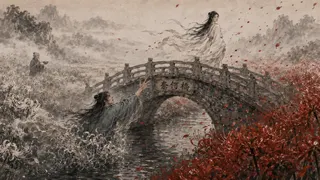
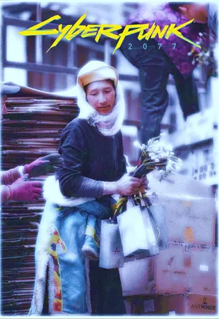
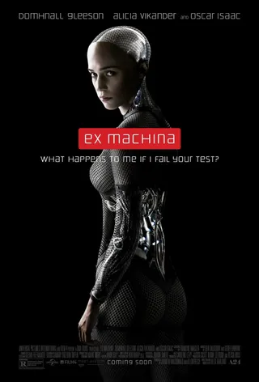

睿深
整个网页的代码主体是由 Codex 的 GPT-6.1 Sol 完成。
由于原生 markdown 语法渲染图片形式的效果已经足够，在此就无需展示。而对于 pdf、音频和视频的展现效果则需要进行额外开发，以下就是目前对多媒体的展示效果，音视频资源样例都由 Codex 生成，后续会根据使用反馈持续改进迭代。
pocket-sparks
site-in-ten



整个网页的代码主体是由 Codex 的 GPT-6.1 Sol 完成。
由于原生 markdown 语法渲染图片形式的效果已经足够，在此就无需展示。而对于 pdf、音频和视频的展现效果则需要进行额外开发，以下就是目前对多媒体的展示效果，音视频资源样例都由 Codex 生成，后续会根据使用反馈持续改进迭代。
pocket-sparks
site-in-ten
这是第一段正式内容，当前网页暂时是个人认为最适合自己的日志形式。
它不仅能够只使用 markdown 格式来编写内容，还可以渲染呈现出 Twitter / X 的展示形式，这种展示形式有以下特别的优势：
时间线展示最有效，不需要刻意地一次性将所有内容都编写完成，因为有时不经过一段时间间隔，很多内容也达不到想要的效果，通过引用或回复此前已有的内容，就能将一段内容因时间的改变而可能产生不同思考的过程记录并还原。
不需要考虑太多形式，只需要保证富文本、音频、图片、视频等基础格式可以较好地呈现，就足以覆盖绝大多数内容。如果需要更复杂的形式，那就直接编辑特定的网页，这样就可以聚焦内容本身而不是展示形式。
在需要自动化分析已有内容时，时间线的形式也非常好溯源。
还可以通过以上这种标签的格式，来快速地分类和搜索对应内容。
如果一段内容偏长，可以先自动折叠内容，防止在视觉效果上带来整个网页内容的臃肿，然后再通过 展开 或直接点击对应内容在新页面查看详情来浏览全部。
在社交媒体中看到如下一张插图：

虽然我不认识图中人物是哪个动漫角色，但是图中描述的故事还是非常易于理解：在舞台上受到万人追捧的明星偶像，其在非公开场合的形象可能与舞台上塑造的形象是截然相反。
“反差”一词是一个中性词，有人极端厌恶表里不一，有人反而非常喜爱。在信息传播源门槛极低的现代社会，任何社交行为实际上都可以被视为是在舞台上演戏：
极端厌恶表里不一的人会认为如果任何社交都是表演，那么整个社会都不存在真相；非常喜爱反差形象的人会认为如果任何社交都是表演，所有人都在互相博弈看谁的障眼法更高超，那么整个社会就像一个大型攻防游戏，其乐无穷。
这场大型攻防游戏的核心玩法就是：
知己知彼，百战不殆。 —— 《孙子兵法 · 谋攻篇》
能够站在对方角度思考如何防御自己的攻击和如何反击自己，从而制定合适的多策略。最终达到出神入化的境界就是：
出淤泥而不染，濯清涟而不妖。 —— 《爱莲说》
在 2020 年全球新冠疫情时期，作为学生的我第一次进入资本市场进行投资，全球市场都在主要央行的无限量 QE 下一路上涨。彼时流行许多造富神话，其中比较吸引我的是高瓴资本的创始人张磊的故事，作为机构投资者对京东的投资确实可以被称为一段佳话。在他本人的讲述中，反复提及他的导师 David Swensen 。Swensen 是机构投资者的典范，自从1985年掌舵 Yale 大学校友捐赠基金以来就是资本市场的常青树。这本书凝聚了 Swensen 以机构投资者的经验给个人投资者的建议。
这本书可以不分章节，总结全书只需一句话：资本市场的平均回报率就是个人投资者的制胜之道。这句大智若愚的至理名言很难说服散户，因为对于择时与择股的这种决策感和赌博时下注的兴奋感如出一辙，“无为而治”既是古今中外统治者也是个人投资者难以企及的状态。
为什么“仅仅”追求资本市场的平均回报率就已经是最佳策略呢？Swensen 在书中将投资者个人直接投资市场或将资金交给共同基金经理后会发生的大量基本情形进行分析，所有基本情形都指向了一件事：扣税扣费后的超额收益不能补偿风险，在拉长投资周期后，最终会导致回报率低于全市场的平均回报率。
但是，在沪深两市进行长期投资的大量散户也会感到苦不堪言，为什么坚守 Swensen 的理念还是如此痛苦呢？正是因为沪深两市哪怕加上香港市场应得的仓位只占全球核心资产配置不到 5%，并不是全球资金青睐的重仓。试想一下，如果你的果园中有 20 棵苹果树，其中 1 棵哪怕颗粒无收，对整个果园的收成影响甚微，你会在乎这一颗树吗？况且沪深两市并不是长期收益均值正向的市场，本质是一个企业进行天价 IPO 的融资市场，这对信息不对称的个人投资者是极其不利的。那么长期收益正向的全球核心资产合理的配置有哪些呢？
作为中国大陆的个人投资者，想要接受以上全球核心资产绝大多数都是美国资产可能是违背从小接受到的金融教育，但这确是真实的全球市场共识，在资本市场搞民族主义只会撞得头破血流，这也是绝大多数沪深两市和部分香港市场投资者长期郁郁而不得志的原因。
但其实作为个人投资者，尤其是小资金量的散户而言，对择时择股交易超越资本市场这件事一直极度渴望，有没有什么方法能够尽可能在降低风险的前提下获得超越资本市场平均回报率？Swensen 给出了一种目前而言可能是最有可能的金融产品——低费率的 ETF ，这也是我个人在资本市场中“摸爬滚打”得到的经验。使用加权指数 ETF 或行业 ETF 可以尽可能避免单个标的带来的极端影响，研究对象也从变量极多的单一标的转化成为整个市场或全行业。Swensen 在书中还不断强调低费率的重要性，不同交易费率的 ETF 对整体长期收益率影响极大，这种积少成多的收费会侵蚀利润，像滚雪球一样越来越大。即便使用了低费率 ETF 进行交易，想要尽可能降低风险并超越市场平均回报率只能在择时对投资组合进行再平衡，但这种反市场反人性的行为在实操中很难实现。经过长期实践后，我个人得出的可行操作是只在明确的右侧进行组合再平衡，只要进行组合再平衡，相当于是对仓位进行高低切换，无需追求极致的最高点卖出和最低点买入，一样可以得到很好的效果。理论上，根据经济周期，仅仅在 NDX-SPX-DJI 这三大美国股票市场指数 ETF 进行组合再平衡就已经能获得超越资本市场的平均收益率。
总结，作为个人投资者，要像机构投资者一样投资全球核心资产并构建投资组合，随市场的运行进行组合再平衡（这是最考验投资实力的部分），并且根据个人的生活情况进行适当对冲（如拥有较多房产者就可以少配置核心资产中的房产部分，从而降低联动风险）。
几种典型的没有做到风险共担的情形：
无风险共担 → 激励扭曲 → 信息失真 → 责任外溢 → 信任坍塌 → 系统脆弱
【注意】无风险共担是脆弱的充分条件，即无风险共担一定具有脆弱性，但脆弱性不一定都无风险共担。
强制风险共担的措施：
The King is subject to the law. --The Great Charter
“王在法下”是《大宪章》的核心思想，数百年前源自 Britain 的思想启蒙开启了近现代全球几乎所有主流的政治、经济、文化等内容。将该内容抽象成一个问题：人与制度，谁在上？
观察现代全球主要经济体的政治意识形态，欧盟——美国——中国大陆，分别对应左中右，这种政治光谱划分的定义是：
对于哪种政治意识形态更好，应该从不同社会群体的不同立场观察，“极端个人”和“群体”将会是始终对立。
生活在不同约束条件下的群体都有各自的苦衷：
随着数字化技术的发展，关于“人与制度，谁在上？”的问题将会面临一个更大的挑战，这个制度不再是虚无缥缈，而是有形的带有强算法、高算力、大数据的机器。由人制定的制度也将演化成由数学和机器制定的制度，此时再回顾数百年前《大宪章》的核心思想，并观察现代全球主要经济体的意识形态，再思考未来，这个问题可能始终是个随着时间递增而不断转换的周期问题。
以下 2 篇文章已经被相关平台删除。
1923年，紫禁城的黄昏比以往来得更晚一些。
刚大婚不久的溥仪，日子过得并不舒坦。他偶然拿起新娘子婉容的凤冠，想欣赏一下皇家的气派.结果发现上面的珍珠、宝石和玉翠，成色有点不对劲。
找来行家一看，好消息是，东西都在；坏消息是：
全被人换成了假的。
大怒之下，溥仪决定搞一次全宫大清点。消息传出没两天，紫禁城西北角的建福宫，就突然“走水”了。
这是紫禁城历史上最严重的火灾之一。内务府统计，光金佛就烧毁2665座，字画1157件。但溥仪认为，这是糊涂账，统计根本不全面。
后世学者统计，建福宫光是陈设文物就超过1万件。这里汇聚了乾隆一生最喜欢的藏品，堪称整个紫禁城汇聚文物最多的宫殿。
比损失更糊涂的，是定责。民国大总统府派人来查，结论是“电线走火”。这结论妙就妙在，电线不会说话，所以：
没有责任人。
溥仪有次偷听太监们讲话，发现他们私下传话：
是皇帝自己放的火。
这还没完。溥仪一气之下裁撤了所有太监，还发了遣散费。结果拨下来的三五百大洋，经过层层盘剥，到了太监手里只剩下：
20块。
更魔幻的是，皇宫还得负责给来灭火的警察和消防员买单。账单里不仅有茶水费，还有冰激凌、香烟和葡萄酒。
晚年的溥仪在《我的前半生》里感叹，他原以为那些达官显贵是来救火的，后来才发现，他们是来趁火打劫的。
无数珍宝半借半拿地流出了宫墙，转身就进了北京城古董商的柜台。
那时候的溥仪还太年轻，不懂得文化人偷东西，那能叫偷吗？
1958年冬天，知名收藏大家、庞莱臣的遗孀贺明彤，见到了阔别十几年的表弟郑山尊。
郑表弟这次来，不是为了叙旧，而是代表组织——江苏省文化局来的。
他先是痛陈革命家史，又大吐苦水，说现在的南京博物院有多困难，库房有多空虚。千言万语汇成一句话：
你们看能不能捐点儿？
在表弟的动员下，庞莱臣的长孙庞增和大手一挥，向南博无偿捐赠了137件“虚斋”藏品。这些画，每一件都是庞莱臣当年散尽千金从乱世中抢救下来的国宝。
其中大约80%，后来成了南博的一级藏品。
庞家人做事讲究，捐赠前，每一件文物都工工整整造了册。
1962年，南博又向庞家“征集”了11件文物。按照庞家人自己的说法，他们都以极为低廉的友谊价卖给了南博，只有一件藏品收费超过了1万块钱。
1963年，一位叫作徐沄湫的南博征集员，又来庞家“借”走2幅画。
这一借，就再也没有还过。
1988年，庞增和曾就这两幅画起诉过南博，南博的解释很硬气：不是借，是征集。唯一的瑕疵是：
忘了给钱。
法院采信了，判南博补这笔钱。加上30年的利息，总共赔了庞家：
4万块。
转眼多年过去，2014年，南博举办了一场盛大的庞莱臣名画展。庞莱臣的曾孙女庞叔令受邀参加，现场工作人员热情地给她介绍了一位“亲戚”，一位自称也是庞莱臣后人的古文物研究员：
徐莺。
庞家人发现，这位徐女士根本不是亲戚，而且徐女士几个月前还是个读生物学的本科生，研究方向大概是细胞分子。
没有人比徐女士更懂基因突变，变成庞莱臣后人她，已经在坦然接受媒体采访了。
庞令叔给南博写信询问此事，得到的回复是，徐莺还是个学生，以后不会发生这种事情了：
院领导也知道。
蚝南查了一下，现在徐莺对外的身份是杭州师范大学副教授，但不管是人文学院还是美术学院，都查不到徐莺的介绍和简历。
2024年，徐莺教授申请了国家社科基金，研究的专题竟然是：
庞莱臣的藏品。
真正让庞家人生气的是，那次策展人、南博副研究员庞鸥对外称，庞莱臣的后人沦落到了卖画为生。
庞叔令于是向法院提起了上诉。没想到这一上诉，牵出了一个惊天秘密。
在法庭上，为了证明庞家人卖画，庞鸥不紧不慢拿出一份报道，报道称，庞莱臣收藏的一幅仇英《江南春》图卷于20世纪90年代，被芝兰斋购买收藏了。
庞叔令傻眼了，因为按照庞增和当年记载，这件藏品正是当年捐给南博的137件文物之一，怎么会在90年代流入市场了？
为了搞清楚真相，2024年庞家人发函给南博，要求看一眼当年的捐赠品。
结果当然是——没回音。
直到今年5月，庞叔令在北京嘉德的拍卖会上，再次看到了那幅《江南春》。起拍价：
8800万 。
在有关部门干预下，画作撤拍。庞家人拿着法院的调查令走进南博库房，才发现当年捐赠的137件文物里，已经有5件不翼而飞。
面对全网追问，南博终于摊牌了。
他们的说法是：早在上世纪60年代，专家就鉴定这5件是假画。既然是假的，留着占地方，便于90年代做了“划拨、调剂”。
调剂给了谁呢？江苏省文物总店。
文物总店又卖给了谁呢？发票显示，2001年，这幅画改名为《仿仇英山水卷》，以6800元的价格，卖给了一位神秘的：
“顾客”。

这里面的逻辑，比电视剧还精彩。
首先，60年代就鉴定是假的，为什么要捂到90年代才处理？
其次，马未都都说了，当时买文物得实名，除非这买家姓“顾”名“客”。
再次，6800元卖掉的东西，怎么一转手就变成了8800万？
最绝的是，根据2018年的规定，能退出馆藏的，必须是“无文物价值的现代复仿制品” 。
但根据彼时鉴定意见，江南春图卷伪作极好，还有陈鎏的题引是真的。陈鎏是明朝人。用马未都的话说就算是假的，这幅画：
也绝对不是这个价钱。
还有，根据当年庞家人说法以及媒体报道，2010年，曾有媒体报道过，这幅画在上世纪90年代，就已经被艺兰斋陆挺夫妻收藏，怎么又变成了2001年卖出？
而且商品名也不对。一个是仇英《江南春》图卷，一个是《仿仇英山水卷》。
目前，江苏省文旅部门宣布介入调查，南博也没有再予以回复。
有网友称，当时鉴定的都是大家，权威性不容置疑。问题是，一来鉴定的专家都已经去世了。二来，专家们业务能力是一回事，会不会配合博物院又是另外一回事。
这5件文物，会不会像当年的建福宫大火一样，变成了一笔糊涂账。
事实上，和《江南春》图卷一起被划拨给文物总店的文物，共计达：
1259件。
有记者采访了当年签字同意划拨的南博原副院长徐湖平。徐院长回复得很干脆：
我不是鉴定专家，这事没经我手。
他还表示，自己退休多年，身体不好，一直在家养病。
但我查了一下，就在去年，80多岁的徐老院长还出席了活动，在台上滔滔不绝讲了40多分钟。媒体报道说他记忆力惊人，对南博几十年前的往事：
讲起来恍若昨天。
徐老院长的记性确实好，但还有人的记性比他更好。
这两天，南京博物院典藏部退休职工郭礼典，在视频里实名举报了这位老领导。
郭师傅举报了很多年，直到这两天才被看见。他说当年把真文物鉴定成假文物，再划拨给文物总店，并不是什么管理疏忽，而是一条产业链。
文物商店转手把这些“赝品”，倒卖给了一家上海的拍卖公司，最终都流向：
海外和私人藏家。
对于南博来说，这样的事情，历史上发生远不止一次。
根据著名文史学家、红学家冯其庸的回忆，上世纪80年代，时任南京博物院院长的姚迁曾向他抱怨：
很多老干部会向博物院“借”走字画。
出于职责所在，姚迁经常要硬着头皮去找老干部们催要文物。再后来，姚迁被免职。
再然后他就自杀了。
1992年到1993年，南博一位担任保管员的员工陈超，曾先后盗取博物馆文物19件，然后以3万元价格倒卖挥霍，最后被枪毙。
1993年，一群紫金山中学的学生们来到南博参观，在经过大殿时，有同学发现右侧石柱有一把折叠伞一样的东西，写着字画。
这幅跟折叠伞一样，被随手扔在大殿外石柱边上的，是南博馆藏的明代画家丁云鹏的《云山雾霭图》。
直到半个月后，还是学生主动告知，才物归原主。
不仅仅是南博，对于公立博物馆来说，“消失的藏品”从来不是新鲜事。
浩南翻到过一份1980年由公安部、文物局和文化部下发给各地文物主管单位的通知，里面说：
有单位被偷了20多次，被偷了五百多件文物都没发现；
很多单位被偷了之后，压根说不清楚自己到底丢了多少文物。
相比之下，广州美术学院的萧元馆长，路子就野得多。
萧馆长有个绝活：画画。他利用当图书馆馆长的便利，配了一把没人知道的备用钥匙。
每逢周末，萧馆长就去库房加班。他把齐白石、张大千的真迹带回家，临摹一幅假的放回去。几年下来，他用这种“狸猫换太子”的手法，调包了143幅名画.
这些真迹，后来都堂而皇之地上了拍卖会，卖了3000多万。
直到2014年，一位广美校友在香港拍卖会上发现了一幅盖着“广州美术学院图书馆藏”印章的画作，这才东窗事发。
最讽刺的是，这些假画在图书馆里挂了好几年，美院那么多教授、学生，愣是没一个人看出来。萧元后来在法庭上说了一句大实话：
我看以前的画也有假的，说明在我之前，早就有领导这么干了。
作家丁捷在《追问》里记录过一个更离谱的故事。
一位文化厅的副厅长透露，他有个下属叫“大张”。有一次，厅里发愁一家文化厅直属的宾馆亏损严重的问题。
大张知道后，先是主动帮组织分忧，把老招待楼盘下来，不要组织一分钱，新建翻修，保证3年盈利。把领导高兴坏了，觉得大张懂事。
一开始，纪委的同志还以为大张是靠工程款贪污。结果查了半天账目，发现大张一分钱没捞。真正的玄机在这栋楼里，有无数书画家在这里写字作画，楼道房间，都挂满了省内知名大师的作品。
大张的算盘打得噼啪响：他先把真品拿走，再把赝品挂上去糊弄，等熟悉这里的老干部们，退休的退休，去世的去世，就彻底把这些字画据为己有了。
这些画本来就没有入账，将来就算有人发现不对，也是一笔死无对证的糊涂账。大张的名言是：
谁能说得清楚呢？
庞家也不是唯一发现捐赠品出问题的。闻一多的堂弟闻钧天向浠水县文化馆捐献了150多件画作，到现在只剩下63件。文化馆工作人员回复：
被领导拿去送人了。
《潜伏》里，站长吴敬中就曾说过，那些珍贵的文物，应该由合适的人来收藏：
穆连成那个奸商他懂什么呀？
南博的事儿一出，很多网友痛心疾首，说早知如此，还不如把文物交给大英博物馆保管。
朋友，你还是太迷信洋大人了。在“古董局中局”这个游戏里，没有国界，只有段位。
大英博物馆一向标榜自己是“世界文明的保险箱”。当年希腊人去讨要帕特农神庙的石雕，英国人就是这么怼回去的：
你们那儿不安全，放我这儿最放心。
这个牛皮，在2023年被戳破了。
一位叫彼得·希格斯的资深策展人，在大英博物馆工作了30年。他负责的，正是希腊和罗马馆。
从2016年开始，就有古董商在eBay上发现了一些奇怪的藏品。有些是从未展出过的宝石，有些是虽然残破但工艺精湛的黄金饰品。
售价低得感人，有的只要几百英镑。
古董商多次举报，大英博物馆的高层却充耳不闻，甚至把举报人当成疯子。
直到2023年，盖子终于捂不住了。
调查发现，大概有1000多件文物不翼而飞。希格斯先生蚂蚁搬家一样，把这些人类文明的瑰宝揣进兜里，挂上eBay，换成了自家的燃气费和超市账单。
这就是那个号称“最安全”的地方。
FBI艺术犯罪组的专家说过，他抓过的艺术品大盗里，有穷人，有富人，有聪明的，有笨的。但他们都有一个共同点：
以为自己是这些宝物的主人。
但无论是紫禁城的太监，南博的“顾客”，还是大英博物馆的策展人，他们都搞错了一件事。
文物之所以叫文物，是因为它们活得比人久。
乾隆爷盖了那么多章，最后建福宫还是烧了；庞莱臣收了那么多画，最后还是散了；大英博物馆抢了那么多东西，最后还是被自家员工偷了。
庞莱臣给自己起过一个斋号，叫“虚斋”。
这位民国最大的藏家早就参透了收藏的本质，纵有家财万贯，也不过是替后人暂时保管：
物藏不过三代。
1949年，庞莱臣去世，庞家面临抉择。
当时庞元济的嗣子庞秉礼，是国民党名将孙立人的秘书。他们连运送家产的军车、船只都安排好了。画箱也打包完毕，只要一声令下，这些国宝就能运往海峡对岸。
但庞元济的孙子庞增和，看着这些祖父穷尽一生心血搜集的瑰宝，做出了一个决定。他说，孤儿寡母的，去台湾很难保全这些东西：
庞家的根，在江浙。
他留了下来，并把其中137件心血，捐给国家，想给这些在乱世中飘摇的国宝，找一个永远的避风港。
但他可能没想到，博物馆也是由人组成的。只要是人，就逃不过人性的弱点。
六十年后，他的后人在冰冷的拍卖目录里，与画重逢。
江南春色今犹在，不见当年献宝人。
2025年5月下旬，北京一家顶级拍卖公司的秋拍预展上，一件估价高达8800万元人民币的明代画卷，悄无声息地出现在了VIP客户的图录里。这幅名为《江南春》的青绿山水图卷，笔法细腻，意境深远，被认为是“吴门四家”之一仇英的传世真迹。
几天后，远在上海的庞叔令女士看到了这份图录。这幅画，本应安静地躺在400公里外的南京博物院库房里。它是66年前，她的父亲庞增和，亲手交给国家的137件家藏珍宝之一。
面对画作主人、收藏大家庞莱臣后人的惊愕与国家文物部门的紧急问询，拍卖被迅速撤下。而本应是失窃案“受害者”的南京博物院，却给出了一个更加令人错愕的解释：
这幅画连同另外四件庞家捐赠的珍品，早已被专家鉴定为伪作，并按规定“处理”掉了。
故事的另一端，要从一个世纪前说起。
庞莱臣这个名字，在中国近现代收藏江湖里，是一块金字招牌。这位出身浙江南浔“四象”之一庞家的实业家，不仅富甲一方，更好收藏。他眼光毒辣，出手阔绰，经手的历代名迹，后来悉数收录于一套名为《虚斋名画录》的书中。
能入此书的，皆为旷世奇珍。
1949年，庞莱臣去世。他的后人继承了这批足以买下半个上海的宝藏，也继承了这位老先生深植于心的家国情怀。他们深知，这些民族瑰宝的最终归宿，不应是自家的画室，而应是属于全体人民的殿堂。
1959年，庞莱臣之孙庞增和与家人做了一个郑重的决定，将家藏的137件（套）“虚斋旧藏”古书画，无偿捐献给了国家。
接收单位，是当时全国三大博物馆之一的南京博物院。
这批文物里，就有那幅日后搅动风云的《江南春》图卷。
为了表彰这一义举，1962年11月，江苏省人民委员会在苏州专门召开了颁奖大会。时任南博院长、我国第一位考古学女博士、著名的“南曾北夏”之一的曾昭燏先生，亲笔为庞家题写了一纸奖状。
白纸黑字，红星为印，上面写着：
庞增和先生将家藏古代书画一三七件捐献给国家，特给此状，以资褒奖。
这份信任，本应重于千金。
庞家人也一直这么认为。他们相信，博物馆是时间的保险柜。正如另一位捐赠大家、画家潘天寿先生在1951年捐出自己的得意之作《墨竹图》时所言：
藏之于公，方能传之千古。
这是那一代知识分子最朴素的信念。他们不求金钱的回报，但求精神永驻。他们相信，将私人的审美记忆，托付给一个永恒的公共机构，是使其不朽的最佳方式。
然而，时间的保险柜，有时也会自己打开门。
而且，是以一种他们从未想象过的方式。
庞家人对南京博物院的不信任，并非始于2015年那场关于卖画为生的名誉权官司，而是源自一场更早的、几乎被遗忘的“借画”悬案。
时间回到1963年，距离庞家第一次大规模捐赠仅仅四年。
那一年，南博的一位工作人员徐沄秋，以筹办画展为名，登门拜访了庞增和。他希望能从庞家尚未捐出的藏品中：
借走两幅画作临时展出。
这两幅画，一幅是元代大家吴镇的《松泉图》轴，另一幅是清初“四王”之一吴历的《仿古山水册页》。
徐沄秋当时承诺，展期仅三个月，展毕即刻归还。
庞增和应允了。毕竟，对方是代表国家级的博物馆，这点信任还是有的。
但这一借，就是：
一生。
三个月后，画没有还回来。一年后的1964年12月，一个不幸的消息传来，德高望重的南博院长曾昭燏先生自杀身亡。
一个时代的文化巨星陨落，整个南博乃至江苏文博界都陷入了动荡与悲痛。
庞增和心中虽然焦急那两幅画的归属，但也深知人情世故。他在后来对家人说，实在不好意思在这个节骨眼上，去向一个刚刚失去院长的单位“讨画”。
这一“不好意思”，就等了十几年。
直到1979年，庞增和夫妇才开始重新踏上追讨之路。在接下来近十年的时间里，他们一次又一次地前往南博，询问那两幅被借走的画的下落。
得到的回应，总是含糊其辞，或者干脆：
均无结果。
1988年，耐心耗尽的庞增和，将南京博物院告上了法庭。他的诉求很简单：确认那两幅画的所有权。
然而，由于当年君子之交般的出借并无留下任何书面借据，这场官司最终以一个让庞家难以接受的方式了结。
法院判决，这两幅画并非借用，而是：
征购。
判决要求南博向庞增和支付2.6万元画款，外加2.8万元的利息。用五万多块钱，为这桩悬了二十多年的公案，画上了一个法律上的句号。
这件事，成了庞家人心头一根深深的刺。它让他们第一次意识到，在与公共机构的交往中，单纯的信任是多么脆弱。
但他们依然没有想到，这种脆弱的信任，还会在二十多年后，以一种更具侮辱性的方式被再次撕开。
2015年初，庞家后人因为南博在一篇展览宣传文章中使用了“庞莱臣子孙败落到卖画为生”的表述，起诉南博及作者侵犯名誉权。
为了在法庭上证明庞家确有卖画的行为，从而论证其文章表述并非捏造，南博的代理律师向法庭提交了一份证据。
这份证据，正是那幅本应在1959年就被庞家无偿捐赠的仇英《江南春》图卷。
南博方面称：
此画早已不在院内，而是被一家名为南京艺兰斋的机构所收藏。
那一刻，坐在原告席上的庞叔令彻底懵了。
自己家捐给博物馆的国宝，怎么会流落到一家私人机构手里？又怎么会反过来，成为对方在法庭上攻击自家卖画为生的武器？
这比魔幻现实主义还要魔幻。
诉讼结束后，庞叔令越想越不对劲。从2016年开始，她持续向南博写信，提出了一个在任何捐赠者看来都再也合理不过的要求：
查验当年捐赠的全部137件藏品现状。
面对这个要求，南博的回应，比十几年前的均无结果更加直接和冷漠。他们以一个令人瞠目结舌的理由，拒绝了庞叔令：
你不是捐赠人本人。
法律的铁锤，最终还是敲开了南京博物院尘封已久的库房大门。
在法院出具民事调解书后，南博终于同意，在2025年6月30日前，安排庞叔令查验那批捐赠了66年的藏品。
然而，就在查验日期到来前的一个月，2025年5月下旬，一个更惊人的消息传来。
庞叔令在一位朋友发来的电子图录里，看到了那幅让她魂牵梦萦的画卷。画面上的青绿山水，正是她祖父口中念叨过无数次的，仇英的《江南春》。
它出现在北京一家顶级拍卖公司的春拍图录上，被作为最重要的拍品之一隆重推出。图录为其撰写了洋洋洒洒的考证文章，称其为“市场仅见的仇英青绿山水杰作”。
起拍价：
8800万。
在庞叔令向国家文物局紧急举报后，这场即将上演的拍卖大戏，被按下了暂停键。
拍卖公司撤拍了这件藏品。
但风暴，才刚刚开始。
2025年6月底，庞叔令与她的代理律师尹志军，如约走进了南京博物院。
清点的结果，与他们的预感完全一致。
当年捐赠的137件（套）藏品，如今只剩下132件。除了那幅刚刚在拍卖场上一日游的《江南春》，还有另外四幅画作也消失了：
宋代赵光辅的《双马图轴》、明代王绂的《松风萧寺图轴》、清初王时敏的《仿北苑山水轴》和清代汤贻汾的《设色山水轴》。
一个月后，南博给出了姗姗来迟的书面答复。
这份答复，彻底点燃了庞家人的怒火。南博称，这5件缺失的藏品，早在1961年和1964年，就经过院内专家组的两次鉴定，结论均为：
伪作。
因此，这些伪作已于上世纪90年代，根据当时新出台的《博物馆藏品管理办法》，从藏品序列中“剔除”，并进行了：
“划拨、调剂”处理。
至于划拨给了谁，调剂去了何方，答复中没有说明。
这个解释，每一个字都充满了漏洞和傲慢。
庞叔令的反驳直截了当。首先，我的曾祖父庞莱臣，是业内公认的收藏大家，眼光毒辣，他的收藏可能会有争议，但绝不可能把一堆赝品当成宝贝捐给国家。
其次，即便退一万步说，你们鉴定下来认为是伪作：
你通知我们，退还给我们不就行了吗？
这是最朴素的人之常情。
还有，就算你不退，那这5件你认为是假作的藏品，到底去了哪里？
面对这个问题，南博说，不清楚。
当庞家的代理律师要求南博出示当年的鉴定材料时，他们拿出的东西，更像是一个笑话。
那是一份1964年的文件影印件，标题是《王敦化、徐沄秋、许莘农三同志意见纪录》。但文件的核心内容，几乎全部被打上了厚厚的马赛克，密密麻麻，无法辨认。
在像素格的缝隙里，只有一个潦草的手写字，依稀可见：
伪。
更令人匪夷所思的是，这份关键文件的鉴定人员，并非外界想象的文博界泰斗。根据庞叔令的说法，他们只是南博的普通工作人员，其中一位，甚至都不是书画鉴定专业的。
一个非专业的普通员工，在一份打满马赛克的文件上，用一个“伪”字，就宣判了一幅未来估价8800万的名画的死刑。
这听起来像天方夜谭。
而整起事件最致命的疑点，也正在于此。正如文化学者马未都的质问：
如果它真的是一件赝品，为何能在今天最严谨的商业拍卖市场上，获得8800万的天价估值？难道拍卖行和那些准备砸下真金白银的顶级买家，都是傻子吗？
更何况，根据新华社记者后来查到的物证，这幅画在2001年被“处理”时，价格仅为：
6800元。
从“赝品”的6800元，到“珍品”的8800万，中间相差了一万两千多倍。
这中间巨大的价值鸿沟，到底是谁在扮演“上帝之手”？
就在庞家后人与南京博物院的“伪作”之争陷入僵局时，一个来自博物馆内部的声音，像一把锋利的手术刀，切开了事件最深处的脓包。
2023年12月21日，一位名叫郭礼典的南博退休保管员，手持自己的退休证和工作证，出现在一段实名举报视频中。
他举报的，正是他当年的老领导——从一个高中学历的印刷工人，最终执掌南博二十余年的传奇院长，徐湖平。
徐湖平的履历，本身就是一部传奇。
视频中的人物简介显示，这位日后的文博巨擘，仅有高中文化。他参过军，退伍后在1969年进入印刷厂当工人。直到1973年，毫无文博经验的他被调入南京博物院。
12年后，40岁的徐湖平便被任命为：
南博副院长，官至正处。
郭礼典的指控，不再纠结于某一幅画的真伪，而是指向了一场系统性的、大规模的监守自盗。
在他的描述中，一条清晰的利益链条浮出水面：
第一步，利用院长职权，将馆藏的珍贵文物——特别是无人敢动的故宫南迁文物，指使专家鉴定为”赝品”。
第二步，将这些“赝品”以极低的价格，“划拨”给自己同时担任法人代表的：
江苏省文物商店。
第三步，再由其在上海开设拍卖行的儿子，将这些文物高价倒卖给国内外的富商和贩子，从中牟取暴利。
郭礼典在视频中称，被如此操作的国宝，多达：
上千件。
如果说，南京博物院的“名画门”还隔着一层“鉴定争议”的迷雾，那么郭礼典的举报，则让人想起了另一起更加触目惊心的案件。
广州美术学院图书馆前馆长萧元，一位著有《书法美学史》的专家。在2002年到2010年间，他用自己临摹的赝品，系统性地调换了馆藏的143幅名家真迹，包括齐白石、张大千和八大山人。
他从藏品库里拿走了143幅真迹。
又一丝不苟地，放回去了143幅赝品。
其中125幅真迹被他送去拍卖，获利超过3400万元。全案涉案金额，高达1.1亿元。
当守护者变成了最高效的盗窃者，当专业知识沦为最锋利的犯罪工具，整个体系的防火墙便形同虚设。这或许正是鲁迅先生的远见，他在近百年前的文章《谈所谓“大内档案”》中就曾断言：
“中国公共的东西，实在不容易保存。如果当局者是外行，他便把东西糟完；倘是内行，他便把东西偷完。”
面对排山倒海的质疑和前下属的实名举报，80多岁的徐湖平在家中接受了采访。
他坐在古色古香的太师椅上，神态平静，给出了自己的“四不”回应：不了解、不参与、不经手、不专业。
事实上，在此前的一次公开演讲中，徐湖平曾为自己树立了一个无比清高的形象。
视频里，他对着满堂听众侃侃而谈：
“我当院长当了27年，我从来不在民间买一件东西。你们懂吧，这做官的诀窍。如果我买了，现在是检举的时代，他说你这个500万的东西，5万块钱都不值，他跟那两个私交，100万卖掉，他拿回扣拿了50万，我洗都洗不清，只有跳楼自杀。“
如今看来，他不是怕被检举，而是深谙此道。
视频最后，他把一切都交给了组织：
等上级调查结果。
然而，新华社记者的调查，很快让这份看似无懈可击的回应出现了裂痕。
记者查到的文件显示，1997年那份关键的划拨报告上：
有他清晰的签名。
而接收那批“处理品”的江苏省文物总店，他也曾是：
法人代表。
更不用说，那位以6800元买走《江南春》的神秘“顾客”陆挺，正是他担任会长的江苏省收藏家协会的顾问：
会长签字调拨，法人代表接收，协会顾问购买。
一个完美的流程。
这个闭环，不仅用来变现，更用来“镀金”。
就在《江南春》被低价“处理”前后，一个叫徐莺的女子开始崭露头角。视频资料显示，她对外一直以收藏大家庞莱臣的“曾外孙女”身份示人。
但她的真实专业，是：
植物病毒学。
在举报者的描述中，一条围绕“身份造假”的学术腐败链条同样清晰：
第一步：认假祖宗。在徐湖平的运作下，将毫无血缘关系的徐莺塞进庞氏家族的族谱。
第二步：学术洗白。凭借“庞氏后人”的假户口，让研究植物病毒的徐莺，硬生生将研究方向扭转为“庞家收藏”，并以此为题：
在中国美院拿到艺术史博士学位。
第三步：权威站台。2014年，在南博的一场重要展览上，时任院长的徐湖平亲自下场，向全场宣布徐莺就是庞氏后人，用自己的权力为她的假身份背书。
尽管早在2016年，法院就已判决徐莺的身份造假，但这条为她量身定制的“博士通道”，早已铺就。
如今，国家文物局和江苏省的联合调查组已经进驻南京。
调查组进驻两天后，根据一些流传的视频，2025年12月22日晚10点，疑似多辆公务车辆包围了徐湖平位于南京后半山的别墅——一栋被列为文物保护单位的民国建筑。
行动一直持续到23日中午12点半。
那栋平日极少开灯、被戏称为“像鬼灯一样”的别墅，前一夜灯火通明。有些视频声称，徐湖平夫妇及保姆被一同带走。
目前，这栋位于幽静小路尽头的民国别墅，迅速成了南京市民最新的网红打卡地。人们争相前来，对着那扇紧闭的大门拍照、直播，仿佛在围观一个巨大时代的荒诞落幕。
1959年，庞增和先生将家族的珍宝献给国家时，他所托付的，是一种能让文化血脉“传之千古”的信任。
66年后，这份信任的守护者，在自家那座同样是“文物”的别墅里，被带走了。时间的保险柜最终关上了，但代价是什么呢？
这种信任，是张伯驹捐出《平复帖》时拒收20万奖金的淡泊；是徐悲鸿夫人廖静文将丈夫1200件遗作全部捐出的无私。
这是中国捐赠者最朴素的高贵。他们不求金钱的回报，但求精神永驻。
可当传家宝变成拍卖图录上的冰冷编号时，我们伤害的，何止是庞家后人的心呢？
一个社会的文明程度，很大程度上取决于它如何对待那些无私的奉献者。当时间的保险柜自己都开始监守自盗，当传之千古的承诺变成低价处理的生意，我们又该将民族的记忆托付给谁？
李宇琛的文立于尘
写于2025年12月26日
在中国大陆，虽然相同质量的医疗水平相比美国和欧盟要更廉价且更高效，但这是通过压榨医疗从业人员和营造公有制宣传优势带来的，其负面效果在经济下行时期得到显著放大。
由于医疗从业人员和患者之间存在天然的信息不对称，因此如果医生为了增加营收而欺骗患者接受高价低效的治疗方案，通常不会被察觉。但是随着经济进入下行周期，公立医院的财政赤字也非常突出，因此在严格限制信息传播的环境下依然可以看到多起医生为了多盈利而致患者出现严重医疗事故的事件，最近引起渲染大波的“宁波早产女婴死亡案”就是典型。
由于中国大陆的医护工作强度远高于世界上绝大多数国家，在无形之中，恪守职业道德的医疗从业人员也不免会有严重疲劳导致的意外事故，因此不幸遭遇医疗事故的患者也会与医疗从业人员产生强力对抗。
献血是最常见的医疗捐献现象，由于中国大陆人口数量庞大，因此血库常年处于亏空状态，鼓励献血就成为重要的充盈血库的手段。但是在宣传口径上，打出“献血有益身体健康”和“献血将可以优先用血”等口号，欺骗了无数献血者，现实情况是献血既不有益身体健康同时也不能优先用血。
除此之外，欺瞒死者家属并直接使用死者身体部分（器官移植、骨灰产品、临床实验等）也是常见现象。死者虽然已经失去生命，但其尸体的支配权理应属于其家属，准确说是在其病危通知书上签字的责任人，而不是任何医疗机构，除非家属主动同意捐献而非诈捐。
目前并没有可证明或证伪的相关信息，因为这是最违背伦理道德的行为，境内外关于此方面的报道都带有鲜明的政治立场。但可以通过其他“邪恶”的医学现象来推测，这种现象存在的概率极大。
中国大陆的医疗水平高效性和廉价性是通过利用患者并欺骗其信任交换而来的，那么代价就是一旦信任丧失，就会导致相关秩序混乱并难以重建。在这种环境下生活，首先应关注个人身体健康，尽量避免与医疗机构和从业人员打交道。
12 月 22 日晚间至 12 月 23 日凌晨，快手科技的视频平台遭遇大规模网络攻击，大量直播间被替换成色情内容并持续数小时之久。此事引发舆论哗然，也是公司最高级别的事故。
当日就有自媒体平台曝光，快手科技紧急招聘网络安全专家，虽然并没有在公司公开招聘页面得到查证，但是从基础逻辑推理可以想到这是非常合理的。
大部分人第一时间想到的基本上都是，公司紧急寻求“救世主”来化解此次危机，“亡羊补牢”。但是，在该事件的公开讨论区还有另一种声音，提供了另一种同样非常重要也非常容易被忽视的致命问题：有没有可能这起事故的漏洞无法弥补，但是又不能解聘已有安全团队，于是就从外部临时招聘一些人员，然后将责任通过各种手段转移？
以上两种情况实际上导致的结果截然相反，一名拥有多年网络安全经验的工程师，满心欢喜可能想要跳槽到快手科技，在第一种情况下，他能得到快速施展才华的平台；在第二种情况下，他非但失去了原有工作还会很快被裁员。
个人推测这次大概率属于第一种情况，但同时必须拥有思考第二种情况的意识，这属于对自己的职业风险控制。
Peter Attia 拥有 Johns Hopkins Hospital 外科住院医师的从业背景，这为医学和健康书籍的撰写奠定了坚实的理论和实践基础。不过任何与医药健康相关的资料都需要谨慎甄别，以下仅作为对全书内容重点内容的整理。
盲目追求没有健康保障的永生是没有意义的，尽量延长健康状态的寿命将是未来医学的主要研究方向。
医学 1.0 时期，以公元前的希腊医师 Hippocrates 为代表，显著特点是对于疾病的治疗以直接观察和猜测为理论，并洞察到疾病是由自然引起的而非宗教的“神”，该时期持续了近 2000 年。
医学 2.0 时期，以显微技术的发明和对微生物的观察和实验为代表，显著特点是对于疾病的治疗仍以观察和猜测为前提，但通过实验进行严格论证，目前仍处于该时期。由于抗生素的发明和医疗卫生条件的改善，人类已经能控制绝大多数急性疾病。对于诊断主要慢性疾病，医学 2.0 通常只能在疾病晚期甚至死亡前期才能确诊；对于治疗甚至治愈慢性疾病，医学 2.0 仍然无能为力。
人类健康目前主要面临 4 种慢性疾病的风险：
这 4 种慢性疾病并非在人体中孤立存在，而是一种疾病可能作为另一种疾病的诱因，这种非线性问题更增加了其复杂程度。
医学 3.0 时期，对于慢性疾病需要以主动预防为主，而非仅依赖诊断和治疗。从慢性疾病的最早期产生到晚期直至人体死亡，跨度可能超过 20 年，因此需要尽可能早地提前预防。
通过研究众多百岁老人的生活方式与基因后，人类依然没有办法归因最合理的解释长寿的原因，因此盲目模仿百岁老人的生活方式或更激进地通过基因疗法模仿百岁老人的基因在目前的医学水平条件下都是不可靠的。
人类社会从古至今一直在对抗饥饿，但是截至到目前，在全球绝大多数地区生活的人所患有的各种慢性疾病并非是由于饥饿导致的，相反是由于食物供给太富足，而长期摄入大量糖类反而是诱发各种慢性疾病的根源之一。适当有规律的饥饿可以诱导人体内的细胞产生抵抗不良环境的能力或特性，这与细胞分泌的一些酶等有效物质密切相关。因此在富足食物供给的现代社会中，克制摄入不良食物的欲望是预防众多慢性疾病的高效方法。
人体对各种物质的新陈代谢循环如果出现问题，将是导致慢性疾病的早期前兆。
在大众的认识中，脂肪通常与肥胖密切相关，而肥胖又与众多慢性疾病密切相关，所以容易将脂肪与慢性疾病先关联。实际上与慢性疾病最密切相关的是大量脂肪出现在诸如心脏、肝脏等器官上，而用于储存后备能量的脂肪反而是抵御极端能量消耗环境下的直接工具，这也是为什么有些外表肥胖人群并没有患有严重的慢性疾病，而外表瘦弱人群却患有严重的慢性疾病。因此对于脂肪的认识应该是，在不合适的身体位置尽量减少脂肪，而在合适的身体位置需要储存适量的脂肪。
心脏病主要源于动脉粥样硬化斑块阻塞了血管，其发病表现为突然使人丧失身体机能甚至丧生。这种斑块的形成早在人类青少年时期就已经开始了，因此改善这种现象从任何年龄开始都是合适的，且越早越好。对于一些诸如鸡蛋含有高胆固醇，大量摄入会诱发心脏病的言论，并没有科学研究能够证实。
癌症是由于失控的细胞无限分裂增殖挤占其他细胞的营养和生存空间而导致的疾病。不同癌细胞产生的机理鲜有相似性，至今依然没有任何方法可以高效地治愈癌症。但可以确定的是，癌细胞最大的伤害是从癌变位置扩散到身体其他位置，如果癌细胞不扩散，就可以采用切除癌变部位的方法来保全患者的生命。癌症与人体代谢紊乱密切相关，当身体出现代谢紊乱的症状时除了治疗相关疾病，还需要意识到对癌症的筛查。由于在可见的未来，癌症都难以在中后期得到有效治愈，因此需要经常进行全身癌症筛查，尽早捕捉身体各部位可能出现的癌变可能。
Alzheimer 病和 Parkinson 病是两种常见的神经退行性疾病。Alzheimer 病影响认知能力，临床发病常见于 65 岁后，女性患病率显著高于男性，主要与女性更年期后的激素水平剧烈变化相关；Parkinson 病影响运动能力，临床发病常见于 60 岁后，男性患病率显著高于女性。通常这类疾病与遗传高度相关，但后天环境也会有明显影响。目前这类神经性疾病无法治愈，因此只能在早期进行预防，已知的可能有效的预防方式是额外储备功能以延缓退化，例如为预防认知能力退化可以通过学习多种语言、乐器等堆砌大脑中有关认知能力结构的冗余，为预防运动能力退化可以通过多种身体运动堆砌大脑中有关运动能力结构的冗余。
未完待续...
本文一改往日“留有余地”，更加直接地给出观点。
海参崴自 1860 年中俄签订《北京条约》后改名 Владивосток，直译为“东方统治者”或“统治东方”，一直沿用至今。时至 2025 年，俄罗斯的全球影响力陷入百年来的最低点，俄方也从未对中方就远东的历史问题有过友好的妥协。
广西镇南关，是中国九大名关之一。1953 年改名“睦南关”，受到越南政府官员的一致好评；1965 年又改名“友谊关”。
无论是从“妥协友好”换取更大利益，还是从“民族文化”没有对外侵略的传统，执政中国大陆的中央政府官员，就几乎没有对外发动暴力武装行动的意图。因此担忧未来可能会发生的政治摩擦而会被全球其他国家和地区所报复，属于“杞人忧天”。
台湾问题是自中国大陆中央政府成立以来一直悬而未决的问题，全球其他任何国家和地区的民众在审视中国大陆的全球影响力和台湾问题的现状后，几乎都会得出相同的结论：如果中国大陆以如今的全球影响力都不主动采取措施解决台湾问题，说明根本没有意图解决，自然也就默许台湾是事实上的独立主权地区，只是宣传时依然采用“不承认”的态度。
由于中国大陆实行“一党执政”，因此中央政府的最大利益相关是压制任何反对在执政区域内实行“一党执政”的个人与群体。对于在执政区域外包括香港、澳门、台湾及外国的事务（包括中国大陆境内的境外人士相关事务），几乎全部采取极端忍让的措施，以避免任何可能的外交摩擦。
由于全球供应链重置，中国大陆迫切需要让高端科技产品能够在本土可以生产制造。高端科技产品并非自设计初期就能达到高端性能，而是需要通过厂商设计、供应链管理和客户反馈形成负反馈闭环不断强化得来得。在美国、欧盟、日本、韩国等全球高端科技产品发源地区，客户反馈对产品性能提高的贡献占比较大，呈现“需求为主”。但在中国大陆地区，产品源头厂商的话语权极大，呈现“供应为主”。叠加中国大陆地区的教育与科研的模仿能力强、创新能力偏弱，“供应为主”更加难以诞生高端性能的产品。
简而言之，中国大陆的供应端和需求端的权利结构不对等，需求端向供应端的负反馈传导机制失灵，导致产品向高端化发展的路径断裂。
这种“层层加码”现象反映了中国大陆的基层执行者的权力不来源于居民的共识，而来源于顶层的暴力机构。因此可以完全不考虑对居民的任何负面影响，只需要保证不会触犯上层规定的错误即可。
鉴于此，无论中央机构制定任何合理的政策，在这种权力体系的传播过程中也已经扭曲了其真实意图，造成严重的割裂感。
在中国大陆，8 大类刑事犯罪分别是：
从嫌疑人的动机来分析，（1）（4）（5）（6）（7）（8）相较于（2）（3）在概率上要低很多，而（2）又需要客观的医学鉴定，再来看（3）强奸罪的具体法律条文规定：
《中华人民共和国刑法》第二百三十六条规定，强奸罪，以暴力、胁迫或者其他手段强奸妇女的，处三年以上十年以下有期徒刑。
奸淫不满十四周岁的幼女的，以强奸论，从重处罚。
在下列情况下，强奸妇女、强奸幼女处十年以上有期徒刑、无期徒刑或者死刑：
(一)强奸妇女、奸淫幼女情节恶劣的；
(二)强奸妇女、奸淫幼女多人的；
(三)在公共场所当众强奸妇女、奸淫幼女的；
(四)二人以上轮奸的；
(五)奸淫不满十周岁的幼女或者造成幼女伤害的；
(六)致使被害人重伤、死亡或者造成其他严重后果的。
从法条可以明显看出，中国大陆的司法体系在量刑强奸罪时，仅考虑嫌疑人是男性和受害人是女性这种情况。且在 8 大类刑事犯罪中，强奸罪通常在案发地难以通过第三方证人进行取证，因此女性受害人的口供就成为了强有力的证据。虽然有法医进行生物医学鉴定，但是对于女性受害人没有遭到肢体侵害的这类案件，难以辨别双方是自愿发生性行为还是真的发生强奸行为，但在案件公示后显示的公安、检察、法院在近年来的案件中均有明显偏袒女方的行为。
以下是对公检法等官僚机构的动机分析：由于官僚机构每年都有处理 8 大类刑事犯罪案件的数量指标考核，如同地方政府对公务人员有 GDP 指标的考核，因此在除（3）以外的案件偶发且判定条件相对严格的情况下，只能增加对（3）强奸罪的处理数量才能完成年度官僚考核。且在近年来，随着司法体系中大量涌入女性作为官僚人员，更增加了在案件中偏向女方的概率。且在非刑事类的案件中，女性诬告男性的处罚成本远低于男性诬告女性，也增加了可以使用自由裁量权判定升级为强奸罪的案件基数。
综上，近年来中国大陆强奸案数量显著上升的现象难以说明是社会两性的公共治安环境变差，更大概率是公检法官僚机构面对官僚考核机制的表现。
相传人死后先到鬼门关，过了鬼门关便上一条路叫黄泉路。路上盛开着大片大片的彼岸花，远远看上去，就像是血所铺成的地毯。黄泉路因其花红的似火而被喻为火照之路。
彼岸花，是开在黄泉路上的花。由于花和叶盛开在不同的两个季节，因而花开时看不到叶，有叶时看不到花，花叶两不相见，生生相错。也是这长长黄泉路上唯一的风景与色彩。人就踏着这花的指引通向幽冥之狱。过了那条盛开着彼岸花的黄泉路，就到忘川河，忘川河水呈血黄色，里面尽是不得投胎的孤魂野鬼...... 忘川河旁边有个三生石，石身上的字鲜红如血，上面刻着四个字:早登彼岸，你可以在石头上刻下你今生最爱的人和你来世最想等待的人的名字。
忘川河上有一座唯一的桥叫做奈何桥。奈何桥尽头有个望乡台，望乡台是最后遥望家乡和亲人的地方。在忘记今生一切的记忆前，在脱胎换骨重新做另一个人之前，你可以在这里，最后望一眼你的爱恨情仇，你的魂牵梦绕，你今生最爱的人，你来世还想等待的人。
望乡台旁边有个孟婆，手里提着一桶孟婆汤，每个人都要走上奈何桥，孟婆都要问你是否喝碗孟婆汤。孟婆汤是用忘川水熬成，也叫忘情水，喝下去就会忘记今生今世。一生的爱恨情仇,一世的浮沉得失都会随着这碗孟婆汤忘记得干干净净。今生牵挂之人，今生痛恨之人，来生都形同陌路,相见不识...... 不是每个人都会心甘情愿地喝下孟婆汤。因为这一生，总会有爱过的人不想忘却。为了来生再见今生的最爱，你可以不喝孟婆汤，那便须跳入忘川河，受尽折磨，等上千年才能投胎。但是，千年里你在河里受尽折磨，却只能眼睁睁看着你的爱人一次次过桥却无法相见，千年之后，他（她）已不记得你，你可能也已不是他（她）的最爱......
我们曾是三生石上的旧精魂，千年相伴，看尽人间尘缘，悲欢离合，生死轮回。那日，佛说你们需入红尘。我向佛问我们的姻缘，佛闭目，“一生只得一面之缘。” 我问佛：前世一千次的回眸，换来今世的一次擦肩而过。前世一千次的擦肩而过，换来今世的一次相遇。前世一千次的相遇，换来今世的一次相识。前世一千次的相识，换来今世的一次相知。前世一千次的相知，换来今世的一次相爱。可是当真？佛笑而不语。
我落于忘川彼岸，生在三途河畔，这里阴郁而凄冷。只有一座桥，和桥上那个年年岁岁都守着一锅汤的老人。形形色色的人从我身边走过，走上那桥，喝下那碗中的汤，又匆匆走下桥去。一些人走过的时候，我会听到缠绵的呜咽，生生世世的承诺，我恻然，而那桥上的老人却似什么也听不到，依旧平常的乘着汤，送于上桥的人。日子久了，我才知道这桥叫做奈何桥，这老人，唤做孟婆。我问孟婆，那响起的是什么声音？孟婆说，那是铭心刻骨的爱，铭心刻骨的恨，是人世间最没用的旦旦信誓。原来，孟婆那碗中的汤，叫做孟婆汤，是可以忘记前世的，上桥的人喝下去，便会将这世间一切的恩怨情愁统统忘记，然后等待下一次的轮回。
我问孟婆，他是不是也会忘了我？孟婆不语。我问孟婆，我什么时候会开花。孟婆说，到了开花之时便会开了。我盼望着花开，盼望绽放最美的容颜，盼望着和他一生一次的相见。孟婆看着我，叹一声，又要是秋彼岸了！我疑惑。于是，我知道了，春分前后三天叫做春彼岸，秋分前后三天叫做秋彼岸，是上坟的日子。秋彼岸初来的时候，我惊异的发现自己绽放出白色的花朵，如霜，似雪，扑满了整个三途河岸。孟婆说，有了彼岸花，这黄泉接引路不再孤单了。彼岸花？她说的是我么？不，我叫曼珠，不叫彼岸。一年一年，我在每个秋彼岸的时候准时绽开，一片片的。他终究还是来了，在我还没来得及绽放的时候，匆匆的来了。匆匆从我身边走过，我拼命的叫他，沙华！沙华！他似全然失去听觉，就这样匆匆走过，让我连他青衫的角也触碰不到。我哭泣。
孟婆冷冷的说，他不叫沙华！不，他是我的沙华，三生石上的沙华。在泪再也无法流出的时候，我开始沉默。每年秋彼岸的时候，我依旧静默的开放，送过一个一个来来去去的亡魂。一千年里，我看着他在我身边匆匆的过，没有停留，也没有看我一眼。又一千年的时间在一开一落中开始，又走向结束，他变幻着身姿走上奈何桥，端起孟婆的汤。我的泪，流了又流，我的心，碎了又碎，我呼唤他：沙华，我是你的曼珠，你不记得了么？！
终于，在一个秋彼岸的时候，在我绽放了白色的花朵的时候，他来了，带着满身的风尘，一脸的憔悴，来到我的身边。我曾以为他又会匆匆的过，匆匆的喝下那让他把我越忘越远的孟婆汤。然而，他走过我身边的时候，竟然放慢了脚步，转过头来看了我一眼。只那一望，心中干涸的泪又如泉水般涌出；只那一望，便将心中数千年的积郁化作泪水；只那一望，万般的幽怨都如云散。那个秋彼岸的时候，我开得格外鲜纯。又是数千年的等待，数千年的一年一见，他每次回头的一望，都让我心里裂开一道深深的痕，一年一年…… 不记得这是多少个千年的相遇了，他突然停在我的面前， 喃喃自语，似曾相识，似曾相识……。
我惊异，心在那一颗彻底碎裂了，白色的花，在那个瞬间惨然的变成红色，如火，如荼，如血…… 他受惊般的退上桥去，孟婆汤从他颤抖手中的碗里洒出…… 从此，在秋彼岸的时候，忘川里便开满血色的花，夺目、绚丽而妖异。他又在花开的时候来了，在我身边徘徊着，徘徊着，在走上桥头的那一刻，竟然回头， 嘴里喃喃，曼珠？曼珠？我已无泪了。孟婆长叹一声，这是这近万年来，我听到的唯一一声叹息。
他蹲下身来，亲吻着我的脸，轻轻的说， 曼珠，我不会再忘记你，我要你陪在我身边。我恍然的望着他，难道他不记得佛说，我们只有一生一次的相见么？他笑着看我，波澜不惊的采下一株花藏在袖中走上桥去，我看到他微笑的看我慢慢的喝下汤去。孟婆的脸上闪过一丝奇异的笑。佛说我们违背了天意，从此永生永世不得相见。他却在笑，笑得很舒心。于是他化作我茎上的叶，叶落方可花开，花开叶已落尽。他说，我们不要一生一次的相见，我们不要陌路相忘。这是我们永生永世的相守，不再分离，不再忘记！于是，佛经说：彼岸花，开一千年，落一千年，花叶永不相见。情不为因果，缘注定生死。于是，彼岸花在佛语里有了另一个名字：曼珠沙华。
在现实世界中，有这样两组看似违背常理，但却是客观事实的现象。
捍卫集体利益，实际上受益的少数个人；捍卫个人利益，实际上受益的是整个集体。
“好人”不能做一件“坏事”，否则就是骗子；“坏人”只要做一件“好事”，就是“浪子回头金不换”。
为什么会有这种奇怪的现象呢？
由于集体必须有秩序，因此必须选举代表，这些少数代表不可能与集体中所有人的利益一致，因此就会倾向符合个人利益的方向，代表占比越小，受益者的比例越小。如果每个人都只考虑自己，那一定会和其他人存在博弈，随着时间推移，博弈形成了动态的平衡，最终使整个集体向着维持最佳平衡的方向发展。
“好人”会被人群认为是不会做一件“坏事”的圣人，在人群中形成了一种积极的群体幻觉，一旦正面幻觉被打破，人群就会迅速转向负面幻觉。“坏人”会被人群认为是不会做一件“好事”的恶魔，在人群中形成了一种消极的群体幻觉，一旦负面幻觉被打破，人群就会迅速转向正面幻觉。
在全球网络上都盛传的一句名人名言：
To learn who rules over you, simply find out who you are not allowed to criticize.
通常这句话的出处都会写法国启蒙思想家 Voltaire 的名字，但实际上这句话并非出自他，反而源于一名极右翼保守主义者 Kevin Strom 的在 1993 年撰写的文章，原文中是这样描述的：
To determine the true rulers of any society, all you must do is ask yourself this question: Who is it that I am not permitted to criticize?
为什么会错将他的话视作 Voltaire 的名言呢？大概是这句话的逻辑非常合理且符合 Voltaire 的反权威和捍卫言论自由，而一旦受众知晓这句话居然出自一名极右翼保守主义者，也许就不会被广为流传，这种“张冠李戴”反而起到积极效果。
由此其实可以看出，惊艳的逻辑和创意并非一定是天才的产出，无论出处只要合理即可为我所用，同时也要注意核查信息来源。
《百家讲坛》系列栏目早期邀请的讲解嘉宾通常都是学识渊博的专业研究者，其中我个人最热衷于听河南大学教授王立群解读的历史。他个人的经历也是中国大陆的政治经济文化巨大变迁的写照，其个人精神意志非常坚韧，透露着儒雅随和与历史研究者的“反脆弱性”。
他对历史的解读有着非常明确的逻辑性，且非常严谨地说明哪些内容是史料原文、哪些是历史杜撰、哪些是个人推测，且对各种内容都带有概率性地分析。他明确指出，历史有 4 个层次：
真实的历史：客观真实发生的历史，但除非生活在历史发生的时刻且是亲身经历者，否则都不能称为客观真实发生的历史。
记录的历史：客观真实历史发生时，亲历者将其记录下来，但是由于观察的时空角度不同，记录的历史相对于真实的历史就会存在明显的主观性。
传播的历史：在前两者的基础上，传播者将历史作为信息进行传播，传播的历史主要由 3 种势力介入进行干预，分别是政治（控制信息传播媒介）、历史学家（研究历史的人士）、文学家（以历史为背景进行文学传作）。
接受的历史：经过上述 3 个过程，最终“历史”被获取信息的人接受，因此任何接受的历史都是上述 3 种历史的复合产物，接受者还会不停循环重复上述的过程。
显然地，“历史”与“经济”相同，永远不可能有公式可以全面地准确地描述，因为它带有极强的“反身性”。
在王立群教授作为嘉宾解读的历史人物中，我个人认为对现实启发最大的就是刘邦的历史。在普罗大众的青少年时期，可能都会仰慕和模仿项羽这样的年轻英雄豪杰，但是等人到中年才恍然大悟，原来项羽的出身就是芸芸众生一生不能企及的高度。但是刘邦中年发迹，从泗水亭长的位置，抓住时代机遇，仅用 7 年时间就一统中华，在描述他的历史故事中，留给大众无尽的知识宝藏。
当然关于历史机遇和个人能力，在刘邦的故事中，究竟哪个更加重要，不在这里评判。因为机遇是难求的，但是个人能力是可以主动提升的，以下是我的总结：
标题这一句看似是古代文学经典，实际上是现代网络流传语，翻译成为现代汉语就是：父母能力较弱时，子女应通过经商改变命运；若父母权势较强，子女可借助背景进入仕途。家族根基深厚者宜在原籍发展，充分利用人脉资源；家境贫寒者则需远走他乡，寻求更多机遇。
虽然这是现代网络流传语，不过纵观古今中外的历史，依然有非常高比例的实例能够印证其原理。在经历过周期波动依然能够处于上层阶级的家庭中出生的人更能认同这个原理，并且也已经极大收益于“父强”和“族望”。但是生于“母弱”和“家贫”环境中的人，却难以认识到这个原理，且舆论控制方也偏向于宣传“鸡窝中的凤凰”，又由于家庭环境的信息源狭窄或被污染，导致年轻时期受困于家庭和自身的思维困境，中年时期受困于职场压力，晚年时期受困于身体健康，从而一生都困于中下阶级，不过这也是占比最高人群的常态。
由于中国大陆在 1960s 到 1970s 之间存在暴力均贫富，强制社会不同阶级融合的历史，因此当 2020s 经济急速下行且大众舆论的迅速民粹化环境，让大量高净值人士甚至中产人士都担忧历史将会重演。
由于中国大陆的电信运营商不给普通个人提供接入国际互联网的服务，因此无论是外贸、学术研究、金融交易等国际化的内容，都需要使用 VPN 接入国际互联网。而在中国大陆的司法实践中，与 VPN 相关的行为该如何在法律法规层面清晰地界定一直处于模糊的地带。而当前国际关系与大众舆论塑造的紧张氛围，令使用 VPN 的人士也都有着巨大的隐忧，是否在不远的将来，VPN 将会被彻底封锁。
针对以上这两个问题，必须从政治治理的层面考虑。由于中国大陆政府的最大诉求就是维持稳定，因此当实行暴力均贫富和完全封锁 VPN 的政策会造成巨大的影响稳定的风险时，就会停止执行政策甚至完全转向。由于目前中国大陆的权力阶层及其利益相关共同体是无法接受暴力均贫富和完全封锁 VPN 的，这与 1960s 到 1970s 是完全不同的，因此引导大众舆论并持续散播恐慌情绪将会是常态，而真正付诸实践将会面临巨大的阻力。
“堵不如疏”将是常态，但依然不能排除极端情况的发生。
如何理解现代国家的国防和境外反动组织？这里使用一个故事来讲解。
牧羊人拥有一个羊圈，羊圈里养了许多羊。
牧羊人很苦恼，因为总有羊想要翻出羊圈去到外面广阔的草原。
但是加固羊圈和增加牧羊犬进行看管非常费时费力，于是他想了一个好主意。
由于牧羊犬和羊的天敌也就是狼的样貌相似，于是他打算让部分牧羊犬时不时扮演狼来抓羊，而另一部分牧羊犬再勇敢地驱赶走狼，以此让羊群都有一个根深蒂固的想法，也就是外面看似广阔的草原实际上就是羊入狼口的坟地。
但是羊圈的羊群都认识自家的牧羊犬，因此他就和周边许多牧羊人商量好，都让对方的牧羊犬假装狼骚扰自家的羊群，再让自家的牧羊犬赶走对方的牧羊犬。
每次双方牧羊犬的打斗场面都是剑拔弩张且气势如虹，但总是没有牧羊犬受伤。
然后在羊群睡觉时，几个牧羊人都带着自家的牧羊犬一起欢聚一堂，各家再抓出几只羊用来做全羊宴，其乐融融。
那么看完这个故事的你，是牧羊人、牧羊犬还是羊群中的羊呢？
《葫芦小金刚》是 1980s 的一部经典中国传统风格的动画作品，由葛桂云指导，上海美术电影制片厂发行。作为《葫芦兄弟》的续集，《葫芦小金刚》的主题寓意不再含蓄，而是直接在台词中直抒胸臆，说明人心博弈的方法和手段，下面按照剧情顺序依次列举。
青蛇精为了给姐姐报仇，使用挖墙脚、钻空子和找缺口的方法，动摇葫芦兄弟合体形成的气色山峰的根基，并各个击破。
面对天生神力、力大无穷的大娃，青蛇精使用金元宝和“钱通神”，让大娃掉进钱眼无法钻出。
面对拥有顺风耳和千里眼的二娃，青蛇精使用一个黑色扇子吹出歪风邪气，让耳聪目明的二娃被蛊惑从而双目失明，再也无法探查妖怪的机密。
面对铜头铁臂和金刚不坏之身的三娃，青蛇精使用一个红色小鞋让三娃动弹不得，然后等到三娃把自己最薄弱的背部暴露出来，青蛇精一记闷棍将他捉拿。
面对气吞海河的五娃，青蛇精等到他吸水时将“霉臭五毒汤”倒进河中，五娃吸入被污染的臭水后腹痛难忍，终被擒拿。
拥有宝葫芦的七娃，将青蛇精等吸入并开始炼化这些妖怪，青蛇精使用一只蛀虫从内向外咬穿宝葫芦，并通过这个漏洞直接击碎整个宝葫芦，然后擒拿住七娃。
同时面对四娃和六娃时难以招架，鳄鱼头领先拖住六娃，青蛇精将四娃引入无限循环的地下冰窖，让其沉睡其中。
面对可以隐身的六娃，青蛇精使用一条显形的尾巴接在六娃身上，让其无所遁形，再使用一个金锣扣住六娃。
面对可以喷出三昧真火的四娃，青蛇精变出一个大锅并与他打赌，如果四娃可以烧熟大锅饭就可以放了所有葫芦娃。四娃自信地使出全力，但是始终无法煮熟大锅饭，青蛇精趁其虚弱将一盆冷水泼在他身上，直接浇灭他的喷火能力。
七个葫芦娃被青蛇精全部抓住并放入炼丹炉中，在危机时刻，四娃想起山神所说的话，拿着七色彩莲和其他兄弟合体成为葫芦小金刚，拥有所有七个葫芦娃的神力，并直接打破炼丹炉，短暂地将青蛇精打得东躲西藏。
小金刚在寻找妖怪时，解救了被关押的小蝴蝶。青蛇精使用毒气短暂迷惑了小金刚并抓走了小蝴蝶，让她作为卧底，许诺让本是犯了错的丫鬟的小蝴蝶可以将功赎罪。小蝴蝶找到小金刚并陪着他一直在奇香谷纵情享乐。小金刚也无意中暴露了自己的腰部是最大弱点，青蛇精让小蝴蝶用匕首刺小金刚的弱点，无奈事情败露，小金刚一脚踢倒小蝴蝶。但是在小蝴蝶的甜言蜜语下，小金刚又重新和小蝴蝶一起寻欢作乐，在畅饮甘露后醉倒过去。小金刚脖子上挂着凝聚神力的宝物被蝙蝠偷走，他的神力也因此消失，被锁链困住无法挣扎。
透过地牢缝隙得到阳光雨露滋润后的小金刚又重获法力，但妖怪的偷袭扎中小蝴蝶的胸口，她临死前说自己本是奉命迷惑小金刚，但被他的真诚和勇敢折服并喜欢上了他，还告诉小金刚只要摧毁青蛇精的法宝就可以打败妖怪。
保护青蛇精法宝的第一关是一个有着血盆大口的石门，喜欢吃所有熏黑的东西，小金刚丝毫不惧，直接用一个大石头砸烂石门。
第二关是会谈迷魂曲的蜘蛛精，小金刚一开始直接被迷倒，但是小刺猬让他捂住耳朵后，直接喷火烧死了蜘蛛精。
第三关是一个会变换各种面相的石门，但是小金刚丝毫不上当，于是石门恼羞成怒，被小金刚砸烂。
第四关是伸手大王，它向小金刚索要礼物，在它抓住小刺猬时，小金刚直接用巨石斩断伸手大王的手臂。
第五关是一个外表温柔的女人，她把小金刚搂在怀中让他安然入睡。小刺猬及时使用自己的尖刺扎醒小金刚，让他立即清醒并杀死女妖。
第六关是软硬不吃的钢牙大王，小金刚在打斗几回合后，灵机一动，发现钢牙大王的鼻孔怕痒，于是在挠痒后直接把冲破它的所有牙齿。
最后一关是金刚大王，他的硬实力和小金刚不相上下，小金刚主动示弱，被抓住后主动寻找并发现它的弱点是肚脐，然后使用金刚指直接戳破金刚大王的肚皮。
在摧毁青蛇精的法宝后，小金刚再次将青蛇精等妖怪镇压，但是并不没有将其消灭。
Psychologie des Foules 的法语直译是“大众心理”，中文译者将其翻译成“乌合之众：大众心理研究”，本书被认为是群体心理学的奠基之作。其作者 Gustave Le Bon 是19-20世纪的一位法国社会心理学家，他对民主制度和社会主义都持有批评态度，政治思想偏向于“马基雅维利”主义，认为不同政治制度都只是不同群体控制者创造的不同群体幻觉。
Machiavellianism 和 Le Bon 的思想都强调政治的核心是控制而不是道德，前者强调统治者的策略，后者强调对群体心理的操控。对群体心理的操控在人类文明甚至高等智慧的动物群体中都非常通用。
永远没有完美的制度与环境，制度本身只是表象，关键在于对群体心理的掌控，以下总结了十几条书中对“群体”的描述：
无论是家庭、组织、公司、国家等任何群体，都或多或少符合上述部分或全部特征。理性的个人首先需要避免被生存环境中的群体幻想所控制，然后再观察对比不同群体的幻想，最终也可以创造幻想用以控制群体。

在记忆中，从生来就没有被动物或昆虫咬伤过，不过凡是都有第一次，这次就被一只蜈蚣咬伤脚趾。
在深夜赶往区医院急诊的路上，由于并没有区分蜈蚣毒和蛇毒的知识基础，因此心中自然是非常恐惧。在到达区医院急诊后，值班医生明确说明不能诊断，必须前往市中心医院就诊，这又加重了我的心理负担。
在市中心医院急诊部挂号时，我亲眼目睹了更触目惊心的情景。在我缴费拿到门诊排号后，有一位长相黝黑的中年男士在和后面排长队的人说明自己更严重的病情后就先缴费排号。收费人员眼睛盯着屏幕，一手在键盘上操作，一手去拿那名男士手中的单据。但是刚触碰到那名男士的手后，他表情极其痛苦并且嘴中发出一生哀嚎，我定睛一看，原来是他的手指头已经折断，包着的纱布上全都是血。看到这一幕，我甚至感觉被咬伤脚趾的疼痛都缓和了许多。
在门诊排号等候时，我也在搜索与被蜈蚣咬伤相关的病例与生物医学原理，与此同时我脚趾的疼痛感也确实逐渐缓解而非心理作用。最后在医生诊断后，开具了上图中的药方。现在我已经清楚，除非在热带地区被非常强烈毒性的蜈蚣咬伤，否则被蜈蚣咬伤类似于被马蜂蛰伤，蜈蚣的毒性强弱通常取决于体型而非种类，且几乎不存在病情反复的情况，通常会越来越严重或逐渐缓解。
从医院离开后，路途中一直萦绕在我脑海中的就是身心健康一定是第一关切。虽然病情很小，但是今天的心路历程就如同那些经历过“死而复生”的人群一样，对生命的珍视又加深了层次。
Nassim Taleb 是一名黎巴嫩裔美国人，著名的作家、统计数学家和基金经理，其思想理论体系具有极其强大的“反脆弱性”（这听起来有一点像递归定义，他提出的“反脆弱性”这一理论本身也具有反脆弱性）和可实践性。在我个人看来，会将本书放在他一系列著作的最首要位置，其次是 The Black Swan。
作为一名成功的基金经理，他的反脆弱理论自然被广大投资者应用在市场中，但这种理论最大的意义在于可以推广到宇宙中的一切还在运动的事物中，普适性极强。
由于这本书被交易员奉为圭臬，因此我选取了一篇简要整理其核心思想的文章，该文章罗列了 100+ 短句，这也省去了我自己再去重复整理的时间，详见以下内容。
一个人的量化之旅
2025年01月21日 08:13 上海
然而，查看他人总结的二手信息总不如亲自阅读并总结一手信息，因此下文记录了个人实际的阅读所想。
第一卷介绍了反脆弱性，即在不发生系统性危害的情况下，适当进行轻微损害反而会导致有机体更加茁壮进而发生进化。第一次接触这种观念的人可能难以理解，但是生活中绝大多数例子都是最佳证明：
大量例证也都指向了一种行为，就是堆砌冗余。
反脆弱性能促使有机体进化，但是这里的有机体指的是一个系统：细胞相对于大分子是系统相对于个体，人体相对于细胞是系统相对于个体，公司相对于个人是系统相对于个体，国家相对于公司是系统相对于个体。系统会在个体的有限牺牲下发生进化，也只有这种残酷的方式（因此无限增殖的癌细胞会破坏人体系统而不是让人体进化）。失败和死亡是必要的，但是作为有精神思想的每个人都不想让自己作为被牺牲的个体，因此正确认识可进化的系统和被牺牲的个体，实际上这是一个立场问题，没有对错之分。
第二卷中强调了不允许发生一点小错的“稳定系统”通常都会导致一次巨大的不稳定使系统瓦解，而频发且系统能否自我修复的小波动才能让一个复杂系统形成动态的稳定，不至于因一次意外就崩溃。
过多的干预在绝大多数情况下都是无益甚至是有害的，但是这里需要明确一个前提条件，这里的“干预”是对复杂的非线性系统，例如自然环境、国家经济和人体等。对于一些非常基础的线性问题，使用科学原理进行“干预”肯定是必要的，正因为非线性系统中的问题是非常复杂的，现代人类还远远没有掌握其规律，因此才需要遵循少干预的原则，“无为而治”在这种情况下是相对最好的方法。
第三卷描述了“预测”和“非预测”，由于一点轻微的扰动就会导致复杂系统出现难以预测的变化，因此想要做到精准的预测是不可能的，最好的方法就是不预测，只是根据系统因随机性而发生的变化去应对。
抱着非预测性的观念去考虑复杂系统，在线性系统中的那些一成不变的原理就不再永恒有效，因此需要一些方法去应对，“杠铃”策略就是其中非常简单有效的方法之一。“杠铃”策略抛弃了平庸的中间部分，只选择最安全的一侧和最冒险的一侧，并且只分配给最冒险的一侧一小部分，并且需要保证这种冒险能获得的潜在受益是无法估量而不是有明确上限的。这样就构建了一个非对称的策略，仅仅使用一小部分的可能亏损去博取几乎无限制的收益。
书中列举了一个我认为非常好的例子，Taleb 也在描述这个例子前做了声明，虽然这个例子中的行为可能违背一些道德观念，但确实是一种典型的“杠铃”策略。一些女性在结婚时会选择嫁给医生和会计师等稳定职业的男性，但是会花费 10% 的时间去与摇滚明星（我想这里可能并不是指那种大众明星，而仅仅指那些“浪子”）偷情。这种策略会使女性有 90% 的相对非常安全的保障，但有最多 10% 的亏损去博取无上限的精神等各方面的收益。当然这里肯定要说明，真正的“杠铃”策略是不能让那 10% 的冒险去影响那 90% 的安全，现实生活中许多女性其实也在采用上述“杠铃”策略，但是她们没有能力驾驭这种策略，让那 10% 的冒险也影响了 90% 的安全。
选择权具有反脆弱性，在金融市场中，选择权主要指期权（options），在广泛的日常生活中，同样存在大量选择权。选择权具有不对称性，即在一定概率下获得的比失去的更多，且是非线性的多。在有利的不对称性结构下，无需太多智力、知识、技巧等，因为这种结构具有反脆弱性，长期结果总是偏向获利，相反具有脆弱性的结构长期结果总是偏向受损。
选择权 = 不对称性 + 理性
理性就是在结构经历波动后，哪些是好的部分要被保留，哪些是坏的部分要被抛弃，类似于自然界的筛选。
生活就是“长 gamma”，gamma 是期权非线性的名称，因此“长 gamma”表示从波动性和可变性中获益。运气在人一生中的重要性远大于努力，因此将自己的生活调整成为具有反脆弱性的非对称结构，在这种结构下，经历越多的波动反而能够捕获更多的运气使自己获益。
承担风险不是赌博，可选择性也不是买彩票，必须精确计算和评估选择权的成本和代价相对于可获益部分是否足够低廉，即盈亏比是否足够高。此时需要考虑进行分析时是否有将非独立即存在函数关系的事物错认为是独立的，从而导致分析谬误。
正如“人类教育鸟类学会飞行”这样愚蠢的问题，大量创新都来源于选择权，即通过不断可承受的试错最终得到卓越的成果。所以，我们对可能的替代流程或者该流程的作用视而不见，即无视以下循环：
随机自由摸索（反脆弱性） → 启发法（技术） → 实践与实习（反脆弱性） → 启发法（技术） → 实践与实习......
与上述循环并列的还有一个循环：
实践 → 学术理论 → 学术理论 → 学术理论 → 学术理论......
当然有一些例外，一些意外的遗漏，但这其实少之又少，并被过度宣 传、过度推广。
虽然我们无法看到压力，但压力就是信息。压力向我们传递了原先的方法遇到了被忽略的或未知的阻挡，因此我们就可以根据这种阻挡调整策略，或探索这种阻挡，也许这种阻挡是一种从未被发现的创新。
“失败是成功之母”，这句脍炙人口的箴言，描述的就是通过不断可承受的试错最终得到卓越的成果，因此“失败者”也是不同的，可以被分为脆弱的、强韧的、反脆弱的。无论如何，向失败者致敬，都需要向失败者学习，是他们的失败将不可见的压力转换成了可见的信息。
构建合理的反脆弱性结构，关键在于准确计算线性的成本和代价与非线性的获益。具体的分析与计算方法，我个人认为在本书中其实描述的也非常模糊，这也是所有畅销书的通病，即涉及复杂但真实客观的数学公式和算法流程时，对其的描述都非常“鸡肋”。
从时间角度看，反脆弱性意味着旧的事物要胜过新的事物，而且是远胜新的事物。时间更了解脆弱性，并会在必要时毁掉脆弱的事物。如果有什么长期存在的事情自己不能理解，那么它在超乎自己理解能力的更深层面上一定是合理的，因为它在时间上是具有反脆弱性的，“存在即合理”。已经存在的事物更可能再存在一段时间，而新诞生的事物并不具备这种反脆弱性。
学会做减法胜过做加法，这并非与上文描述的“堆砌冗余”相悖，因为这里减去的是种类而堆砌的是数量。
在现实世界中，许多能获得反脆弱结构的方法通常是建立在让他人暴露在脆弱结构的条件下，这就涉及伦理问题，或者更合理的说法是——立场问题。因此任何事物都具有选择权，只要站在拥有反脆弱性的立场一方。
至于是否鼓励通过让他人暴露在脆弱结构下以使自己处在反脆弱结构，这里不作分析，这是一个中性的开放的问题，因每个人的价值观不同而不同。但需要在这里列举一些典型现象，有助于识别以上描述的这种行为：


大学室友 A 和恋爱 8 年的女朋友要结婚了，邀请全体室友去参加婚礼，婚礼时间选在 7 月末的周六，恰好所有室友都能抽出时间参加（室友 Z 最后因为家庭原因最后没能前往）。
室友 A 的婚礼规模可以说非常盛大，因为他的丈人是西安本地有名气的地产开发商董事长。A 为我们全体室友安排了在西安可以说最好的酒店下榻，我们在婚礼当天也和伴郎伴娘一起全程参与了“接亲”和相关的活动，并且为我们全体室友安排的酒席位置就在婚礼舞台旁边，整场婚礼的参与感非常好。
我们室友十个人在大学时期的关系就非常好，难得在毕业几年后有一次重聚的机会，大家都从天南海北齐聚于此，最远的室友 T 还在美国读博士。从婚礼酒席到小吃街吃烧烤，到 KTV 唱歌再到深夜打牌，这些都只是形式，关键还是大家各自有了完全不同的亲身经历后，聚在一起分享见闻和感想，这些可以说算是能获得到的各行各业已经非常 insider 的信息了。以下我总结了一些个人认为值得记录在此的信息。
室友 A 说他的丈人因为儿子和大女婿难当大任，因此把女儿嫁给 A，A 就作为职业经理人和妻子一起要管理家业。他的妻子作为财务总监，自己则主要维护客户关系并融入丈人的政商关系中。现在地产市场依然处于下行过程中，我询问 A 公司的应收账款和负债情况如何，他说现在暂时处于平衡状态，但是有至少 7 亿人民币的应收账款，我想他运营公司承受的压力也非同一般。
室友 M 和我是同省参加高考进入大学的，我们在重聚的这几天都在同一个房间休息，因此我和他的交流也是最多的。他是我们本校的硕士毕业，但是据他和我们分享自己在读硕士期间遇见的不分是非的导师和无理取闹的同学来看，他这几年的经历相比本科时期，多少算是受折磨很多，这也让我对网络上各种分享自己在硕士和博士学习期间的不公遭遇有了具体的认识。
室友 M 在硕士毕业后入职字节跳动上海分部，他分享自己每周的时间安排就是：上午 10 点上班，中午没有时间午休，晚上 10 点下班，通勤是电动车骑行 8 公里，回到一室一厅的住所后，整个人已经毫无生气了，只能通过观看 1 到 2 小时的短视频来获取当天的多巴胺。他认为他的直属 mentor 是“精力铁人”，能做到已经 40 岁还能每天在上述作息下有充足的精力和反应力，果然能在“大厂”熬过 35 岁压力线的人都有远超常人的身心素质。我问他你认为降薪多少换取我作为教师这样相对少的工作时长是可以接受的，他说虽然不能线性换算，但是在上海的生活成本是有一个相对固定的底线，就是税后到手 15k 人民币。这样看来，我认为自己同时作为教师和交易员这样“反脆弱”的职业结构相比把自己的时间几乎全部出卖给大型科技公司是非常有生活性价比的，M 也同意我关于金钱只是换取更好生活质量的一种工具而非最终目标的观念。我们还从大厂内部员工角度和外部投资者角度聊了这轮全球 LLM 浪潮的发展，都认可虽然 LLM 技术对长期社会生产力的促进作用极大，但是在几年内的中短期是难以达成许多市场炒作的目标如超级 agent、自动驾驶和人形机器人等。
室友 T 分享了自己在美国学习生活的部分经历，他认为现在随着 D. Trump 再次当选美国总统并缩减教育经费，前往美国读书能够获得到奖学金的门槛变得很高，奖学金的数量也变得很少。他也因为学校暑期不发放奖学金，早就回国了。我问他是否等到下次美国大选若 democrats 重新执政后，会增加教育经费并放松去美国读书深造的难度。他说从过去几届美国不同执政党的政策变化来看，republican 执政时增加的安全、科技、教育等的审查门槛，在 democrats 执政后不会放松，只会维持甚至更严格，在对抗中国，两党的观点是高度统一的。因此他也不打算在博士毕业后留在美国获得 PR，即使他有亲戚已经在美国定居并加入美国国籍，因为在获得 PR 这件事上，亲戚帮助的作用是很小的，而且现在 republican 在收紧 PR，democrats 也只会给高端移民和非法移民放松门槛。
室友 G 分享了自己在北京公司就职但是长期外派到长沙工作的经历，虽然在北京他的薪资并不是很有竞争力，但是外派到长沙后，由于当地收入和消费水平相比北京低很多，因此他在生活消费质量有明显提升后，依然能有比在北京工作生活更多的储蓄。这是一种典型的 carry trading，和赚取发达国家货币并花费发展中国家货币异曲同工。他分享了在长沙体验相对发达的服务业的经历，显然这也是一个没有太多高科技和工业产业的地区鼓励的经济主要发展方向，用以吸引外地人员和资金。
室友 S 分享了自己在国防军工研究所的硕博连读经历，他说虽然自己明知自己的研究内容没有什么太大价值，但是相比研究所其他同事开展的研究，已经非常得领导得赏识。因此也可以得出，国有实体的科研产出效率相比私营实体的效率不可避免地要差很多。并且 S 也明确指出，虽然政策上要求研究所需要采购华为的设备，但是其设备的后续服务支持极差，导致研究所同事的共识就是非必要不使用华为的设备。恰巧室友 W 刚入职华为，但是工作层面的内容并不会影响我们室友间的感情，这也说明大家相对都是理性人。
在大家的交流分享中，还谈及曾经的一些其他同学，这里面我认为最典型的 2 个案例就是女同学 X 和女同学 Z。
因为我们室友这次是因为参加 A 的婚礼才相聚，因此很容易提起同样已经结过婚的同学，女同学 Z 就是其中之一，但是和室友 A 不同，Z 的婚礼可以说是另一个极端。据室友 M 说，Z 嫁给了一个家乡县城的专科学历男，且家中并不富裕，Z 和其是在酒吧相识，Z 在本科毕业后入职大型科技公司，但为了结婚辞去工作回到家乡县城，并通过努力考上当地公务员。然而 Z 的丈夫并没有因此体贴她，两人经常吵架，他们婚礼的规模远不能和室友 A 相比，Z 的丈夫还在婚礼上发表不尊重 Z 的言辞。然而 Z 依然不愿意和他离婚，大家推测这可能和她单亲且没有精神支持的家庭背景有关。
女同学 X 是上述 Z 的室友，据室友说，X 是非常爱慕虚荣和热衷炫耀的人，经常在社交媒体发布其男友认错赔礼的黄金饰品。她有足够的手段规训博士男友，并让其做出骑车超 60km 为其送西瓜这样的事情。并且在还没有订婚的前提下，她已经从男友那里拿到超过 30 万人民币的礼金。
通过以上 2 个典型案例，值得警示的是，社交生活中的风险相比金融市场是不遑多让的，尤其是涉及异性社交。因此同样需要按照对待金融市场的客观理性逻辑分析，去对待社交生活。
总结，如同顶级金融交易员会通过参加全球各地举办的相关研讨会来扩展自己的信息源，普通人士通过参加同学或亲友聚会也能扩展信息渠道和人际关系，创新的思维和观点同样也可能在交流分享中产生。因此多出席高信噪比的交流分享聚会，是作为 insider 信息源和人际关系的有效方式之一。
Daniel Kahneman 是著名的认知心理学家，获得2002年 Nobel Memorial Prize in Economic Sciences，被广泛认为是“行为金融学之父”。《噪声》一书就是聚焦于造成决策失误的一个重要但不易觉察的因素——噪声。由于书中有专门的章节对全书内容进行总结，因此以下大部分内容是直接对原文的摘录，仅在个别地方增加了我个人的总结。
当一组判断中的大部分错误都指向同一个方向时，我们就认为这组判断出现了偏差，偏差即平均误差。
消除一系列判断中的偏差并不能消除所有误差，消除偏差后仍然残留的误差缺少共性。它们是我们在做判断的过程中不希望存在的分歧，体现了我们将测量工具应用于实际时的不稳定性。这种变异就是噪声。噪声是本该相同的判断中出现的变异。这意味着同一个模型在相同输入时会得到不同的输出，这个模型是不稳定的。
根据Pennsylvania大学心理学家Michael Kahana及其同事对大脑记忆的研究，人类大脑有一种会产生内部变异的自身运作机制，这说明将大脑作为测量工具是永远不可能彻底消除噪声的，总会有起伏波动。在生活中的实例最明显的就是情绪，这是一种正常的自然现象。
显然，偏差通常是有害的，减小偏差总是能提高判断的准确性；而噪声同样有害，减少噪声也同样总是能提升判断力。
偏差和噪声哪个问题更大呢？这要依据实际情况而定，答案很可能是噪声。当误差的平均值（偏差）与误差的标准差（噪声）相等时，偏差和噪声对总体误差的贡献相同。如果判断呈正态分布，即标准钟形曲线，那么只有当84%的判断都高于或低于真实值时，偏差和噪声的影响才相等。这其实是很大的偏差，这么大的偏差很容易就能被专业人员检测到。而当偏差小于一个标准差时，噪声就是总误差中更大的错误来源了。
噪声在误差中的重大作用与人们普遍拥有的一种观念相悖，即“随机误差不重要”，因为他们可以“相互抵消”，然而这种观念是错误的，换言之就是想要进行准确的判断那么“负负不会得正”。

均方误差2 = 偏差2 + 系统噪声2
(Mean Square Error)2 = (Bias)2 + (Noise)2
系统噪声2 = 水平噪声2 + 模式噪声2
(System Noise)2 = (Level Noise)2 + (Pattern Noise)2
模式噪声2 = 稳定的模式噪声2 + 情境噪声2
(Pattern Noise)2 = (Stable Pattern Noise)2 + (Occasion Noise)2
水平噪声是不同个体平均判断上的变异性，判断量表的模糊性是水平噪声的来源之一。
稳定的模式噪声是同一个体在对特定案例进行判断时产生的，例如一个特殊的案例会使你进行一些个体化的稳定的联想，且在不同环境下都会产生这种联想。
情境噪声是同一个体在不同环境下进行判断时产生的，例如在不同时间或地点会使你对同一案例做出不同判断。
稳定的模式噪声几乎是水平噪声的4倍之多，情境噪声占比最小。
判断者的认知缺陷并非预测性判断中存在误差的唯一原因，客观无知往往起着更大的作用。
我们预测的准确性是有限的，而且这个限度通常很低，尽管如此，我们还是对自己的判断感到满意。这种令人满意的信心来自内部信号，即当事实和判断匹配成连贯的故事时自发产生的奖励，然而，我们对判断的主观信心未必与其客观准确度有关。
大多数人在得知自己的预测性判断准确度很低甚至不如公式时，都会很惊讶。然而事实上，即使是建立在有限数据上的简单线性模型或在信封背面就能写得下的简单规则，也常常胜过人类的判断，规则和模型的关键优势在于它们没有噪声。正如我们主观体验到的那样，判断是一个微妙而复杂的过程。这样说并非想要表明这种微妙之处大部分是噪声，而是说我们很难想象，盲目地遵守简单的规则都比人类自己做出判断更准确，但这的确是事实。
心理偏差显然是导致系统误差或统计偏差的来源之一，尽管没那么明显，心理偏差也是噪声的来源之一。如果并非所有判断者都共享同样的偏差，或他们产生偏差的程度各不相同，抑或偏差的影响取决于外部环境，那么此时心理偏差就会产生噪声。
噪声不容易被人觉察，也很少被讨论，而且显然比偏差更少受到关注，因此你可能没怎么考虑过它。不过，噪声如此重要，却不容易被人觉察，这本身也是一种非常有趣的现象。
认知偏差以及其他情感或动机对思维的扭曲，常被用来解释糟糕的判断。分析人士用过度自信、锚定效应、损失厌恶、可得性偏差（availability bias）以及其他种类的偏差来解释那些糟糕的决策。基于偏差的解释常常令人满意，因为人类思维渴望因果性解释。每当出现问题时，我们都会去寻找原因，通常情况下我们也确实能够找到原因。在一些情况下，偏差看起来就像是不良决策的成因。
偏差在解释性方面颇具魅力，噪声却缺乏这种魅力。如果试图事后解释为什么某个特定的决定是错误的，那么我们可能很容易发现偏差，但不会发现任何噪声。只有用统计思维来看待世界，我们才会看到噪声，但这种统计思维并非与生俱来，因为我们往往更喜欢因果性的故事。我们的直觉系统缺乏统计思维，这就是噪声比偏差更少受到关注的原因之一。
另一个原因在于，专业人士很少认为自己和同事的判断会有噪声。经过一段时间的培训后，他们通常会自行做出判断。指纹专家、经验丰富的核保员和资深专利审核员几乎不会去想其他同事会与自己的意见不一致，他们更不会去想，其他同事会如何质疑自己的意见。例如在射击训练中，观测者通常更重视有没有命中靶心，但是很少注意到如果从靶纸背面看，虽然看不到弹孔距离靶心的具体偏差但是可以明显看出大量弹孔之间的分布情况，这就是此次射击的噪声。
大多数时候，专业人士会对自己的判断充满信心。他们总以为自己的同事会赞同自己的意见，却从来不会去弄清楚是否的确如此。在大多数领域，人们做出判断后永远不会将其与真实值进行比较，最多是让另一位尊重型专家对其判断进行审查。专业人士之间偶尔才会出现大到令人惊讶的分歧，而且一旦出现这种分歧，他们通常会找到理由来将其视为极端案例。组织程序也倾向于忽略或压制专家之间的分歧，这是可以理解的，毕竟站在组织的立场上，噪声是一种令人尴尬的存在。
对于降低判断中的噪声，我们的主要建议是采取决策卫生策略。我们之所以选择“决策卫生”这个词，是因为减少噪声就像平常的卫生习惯一样，是为了预防未知的敌人。例如，洗手可防止未知病原体进入身体。同理，决策卫生可以防止未知的错误出现。决策卫生与它的名字一样乏味，远不如战胜可预测性偏差那样令人振奋，预防未知损害可能也得不到什么荣誉，但依然值得我们这么做。
原则1：判断的目的在于准确性，而不在于个性化表达。 这是判断中必须遵循的首要决策卫生策略，需要明确的是，个人的价值观、个性和创造力在思考与决策的许多阶段都是重要的，甚至是必要的，包括目标选择、形成解决问题的新方案以及生成选项。但在对这些选项做出判断时，个性化的表达就成了一种噪声源。如果判断是为了达到准确性，且你希望其他人认同你的判断，那么你就需要换位思考：如果其他称职的判断者处于你的位置，他们会怎么想。 遵循这一原则的一种比较激进的方法是用规则或算法来代替判断。用算法做评估可以保证消除噪声——实际上，它是完全消除噪声的唯一方法。算法已在很多重要领域中得到应用，并且越来越受到重视，但是，在重要决策的最终阶段，算法不太可能取代人类判断——我们认为这是件好事情。但是，适当地使用算法或至少让决策不那么依赖于专业人士的个人喜好，可以改善判断
原则2：使用统计思维，采用外部视角审视个案。 当判断者将某个案例视为一系列相似案例中的一例而不是把它看作特例时，我们就说，这个判断者采用了外部视角。这种方法不同于常规思维模式，即 只关注当前案例，并将其纳入因果性故事中。当人们基于自身独特的经历来形成对特定事件的独特看法时，其结果就是会产生模式噪声。外部视角可以解决这一问题：具有相同参照系的专业人员会有更少的噪声，此外，外部视角也有助于产生有价值的见解。 外部视角原则倾向于将预测锚定在一群类似案例的统计特征上。它也提示我们，预测应该是适中的——更技术性的术语是回归。
原则3：对判断进行结构化，将其分解成几个独立的任务。 这一“分而治之”的原则对于解决我们称之为过度一致性的心理机制所产生的影响是很有必要的。过度一致性会使人们曲解或忽略那些与已有结论或刚刚出现的故事不相符的信息。当同一案例的不同方面所产生的印象相互“污染”时，判断在总体上的准确性就会受到影响
原则4：抵制不成熟的直觉。 使用指南、算法或者其他规则能有效降低噪声。
原则5：获取多位判断者的独立判断，再考虑汇总这些判断。 很多组织的常规流程违反了独立性原则，尤其是一些会议流程会导致参与者的意见受到他人的影响。由于信息级联和群体极化效应，群体讨论通常会放大噪声。在讨论之前收集参与者的判断，这样一个简单的流程既可以揭示噪声的程度，又有助于以建设性的方式解决分歧。 对所有的独立判断求均值可确保减少系统噪声，但不能减少偏差。单一判断是从所有可能判断的总体中抽取的一个样本，增加样本量可以提高估算的准确性。当判断者具有多样化的技能以及互补的判 断模式时，求均值的优势会进一步增强。对一系列充满噪声的判断进行平均，其结果可能比全体一致的判断更为准确。
原则6：用相对判断和相对量表会更好。 模糊的量表是造成噪声的主要原因之一，使用精确的量表会显著降低噪声。许多时候提供精确的量表是不现实的，并且我们在同一量表上对多个对象进行归类的能力是有限的，但是我们对众多对象进行两两比较的能力却更胜一筹。可以得出的结论是，相对判断的噪声要比绝对判断的噪声小。
强制采用决策卫生策略可能会费力不讨好。噪声是隐形的敌人，战胜隐形的敌人也只能取得隐形的胜利，但是，就像保持身体健康需要讲卫生一样，决策卫生至关重要。
本书的作者 Kenneth O. Stanley 和 Joel Lehman 是在人工智能领域著名的研究专家，正如本书的核心主题一样，他们一开始只是探究人工智能领域相关的课题，未曾想过能写出一本畅销书。但正是跨领域的研究和一些无心之举使得最终他们撰写出了一本在各领域都有建设性意义的书。
本书的主题可以用一句话概括：伟大的创新极有可能是在无意之中发现的，而非是在一个宏伟的计划中产生的。
书中强调有时看似正确的目标反而可能引导到错误的方向，只有挣脱目标的枷锁才能通往成功的彼岸。这样说并不是鼓励漫无目的的穷尽一切可能搜索，在计算机科学中，搜索算法如果不搭配一些必要的剪枝策略和贪心策略可能导致宇宙生命的终结也无法得到正确的结果。书中强调的目标的枷锁指的是不要把一些看似无关的事物永远排除在搜索的目标以外，这都是可选择的，只不过选择的程度和频率不同而已。
书中反复提及“踏脚石”，绝大多数被计划的宏伟目标之所以无法实现主要原因都是构成成功结果的关键点都不是与该目标强相关的领域内的事物，缺少这些看似无关的“踏脚石”，几乎永远到达不了成功的彼岸。这就揭示了知识跨领域的重要性，在进行创新研究时，研究者最好的定位是一位充满好奇心的寻宝者，在各种可能的领域中寻宝。
书中也指出，少数被计划的宏伟目标也能成功的原因是所有“踏脚石”都已经存在，只缺乏将其全部集合这最后一步。对此我认为最合理的现实中的映射就是科学家进行创新与工程师进行开发这两件事，科学家进行创新需要的是跨领域的看似没有目标地寻找“踏脚石”，工程师进行开发需要的是将已经存在的“踏脚石”进行有目标地整合。因此，本书强调的“告别目标才能拥抱创新”不能歪曲地理解套用到一切事物，这里主要指类似于科学家的创新这一类。
总结，伟大的创新不能被计划，其中绝大多数都来源于“无心插柳柳成荫”。
Howard Marks 是著名的投资家，他是 Oaktree Capital Management 的联合创始人。他的投资观念主要聚焦于 Memo 与 Cycle，本书就是周期投资的经典之一。
根据我个人的亲身经历，绝大多数散户都是抱着快进快出和短时间能够大富大贵的心态而进入市场，但绝大多数人都是无疾而终，有的转换思路有的黯然离场。作为前者，我在个人探索与前人理论的基础上最终确定了周期投资的核心理念，这种投资方法不需要捆绑在具体的资产类别和时空环境，只要地球依旧围绕太阳转动、一年四季依旧更替，这种循环发展周而复始的投资方法就永远有一席之地。
阅读本书，我个人对“周期”一词在投资领域的看法是，因为经济和金融市场的参与者都是人类，人类不是机器，总是在心理上有周期波动，因此造成了投资的周期，可以归结为“投资周期＝情绪周期”。
首先必须明白投入资金和精力的标的现在处于周期的哪个位置，长短周期会嵌套在一起，这也给识别周期趋势带来了困难，但这是最要紧的事情，不清楚所在位置而研究其他问题就属于是避重就轻。
其次在入场前必须先计算好赢面，在周期位置绝佳的位置多投入，在其他位置少投入，做好仓位配比，在局面上进可攻退可守，做到“先胜而后战”。这里摘录一段原文：
做投资的时候，我养成了这样的习惯，我不太关注未来的经济状况，我可以肯定地说，我对未来经济不可能知道得比别人更多，但是我非常关注未来的资本供给与需求情况。提前做好投资布局，重仓布局对手少且不拥挤的投资领域，能给我们带来巨大的优势。你参与人人争着往里面扔钱的投资领域，意味着踏上了一条必然通向灾难的道路。（2001年11月，投资备忘录《你不能预测，但你能预防》）
以上这段文字的出处名称我非常喜欢，预测远比预防困难得多，因此好的投资者应该是未雨绸缪和沉着应对突发事件的高手，而不是所谓的“预言家”。应对不利局面，要敢于撤退而不是死扛，只要对于赔率的计算是合理的，那么在大数定律下，多次投资的平均结果也会是盈利仓位大于亏损仓位，最终的净收益为正。
周期回归主要并不是指回到均值或中心点，而是从一个极端到另一个极端。前往极端点的时间永远比停留在合理点的时间要长得多，因此不要试图刚越过合理位置就立马转向，而是依旧跟随趋势并着手预防趋势转向。
投资周期是情绪周期而不是物理周期，因此只能有一个笼统的测算，不能盲目对照历史上的周期。但是为了避免自己在参与周期时受到极端情绪的影响，依靠程序和数据就能在极端时刻起到定海神针的作用。
最后，周期投资主要关注的长期指标就是信贷周期，短期指标就是情绪周期。这种投资既不像赌博式投资令人惊心动魄，又不像鸵鸟式投资令人踏空懊悔，是一种折中的方式，令人心安理得。
付鹏是东北证券首席经济学家，在中国大陆互联网上有著极高的知名度，他的言论也颇具争议。曾经我会认为在投资领域没有免费的知识，如果有也一定是另有所图，但是在经历过资本市场的实战后，我认识到正确的知识完全可以是免费且公开的，真正能在资本市场获得长期正向收益依靠的是信息差、抗干扰和执行力，不过获得符合真实资本市场的知识依旧是踏入资本市场的第一步。
每位投资者在其投资生涯中都会有一位启蒙导师，我在学生时代就开始用真金白银进行了投资，付鹏可以被认为是我的启蒙导师。在经过连续几年且至少一轮周期切换的市场变化中，其对市场走势的预期最终经过验证是胜率很高，是可以经得住考验的。
为什么他是中国大陆少有的在互联网上可以经得住考验的经济学家呢？我认为可以从他的个人履历找到答案，在互联网公开的信息中，他大学毕业与英国，后直接进入海外对冲基金进行实盘交易。在他的自述中，他在上大学时就开展了二手车套利生意，且在2008年次贷危机后坚定返回中国大陆，原因是他看到了欧洲去杠杆和中国加杠杆的高低切换，对此他也劝诫年轻人“要到还在加杠杆的地方去”。在近几年的中国大陆互联网上，他在其个人社交媒体发布的视频中经常剖析一些现象背后的商业本质，且搭配他个人实地调研的经历。抱著将信将疑的态度，我也在很多场合与各行各业的人交流过，得到的结果也都非常相似，可以二次验证其言论的可信度。
他也毫不吝啬将其知识体系公开以供大众学习，我感到最惊艳和记忆犹新的一个视频是他于新冠疫情前在华尔街见闻节目中进行的一次公开演讲，PPT中展示了全球资本市场的各种大类资产是如何定价以及国际游资是如何在全球进行套利交易的。这对一直在中国大陆受到封闭且扭曲的金融知识教育的学生绝对是一次巨大的冲击，也使得我从此开始在习惯上就将境内与境外和国内与国外进行严格的区分。后来我在港澳的亲身经历以及在全球市场的投资也证明了这种思维才是最符合当前全球资本市场实况的。
《见证逆潮》这本书是付鹏总结其个人投资体系，并致敬中国社科院余永定的书籍《见证失衡I：双顺差、人民币汇率和美元陷阱》所编纂而成。他在公开场合也毫不避讳地说明他的投资体系是师承金融巨鳄乔治 · 索罗斯，这种投资体系就像在草原上游牧的民族，只会到拥有最肥美牧草的地方，这也完全符合索罗斯“开放社会”的理念，但是这与中国大陆教育所灌输的民族主义和集体主义教育理念完全是背道而驰，因此能够接受这种思想对中国大陆的绝大部分人而言在心理上是有极大压力的。但是观察现实社会可以发现，中国大陆社会在教育宣传和实践操作上完全是两套截然相反的体系，类似索罗斯的这种“开放社会”思想其实早已被高官和富商奉为圭臬，这也能很好地解释为什么每年中国大陆的移民数量始终稳居全球前列。
我花费了大量篇幅来解释为什么会看这本书，这也是因为对于启蒙导师的一些情感上的尊重。对书籍内容的总结反倒不多，最大的原因是因为很多理念早已融入我日常的生活中，已经变得和呼吸一样自然。对于整本书的内容，我总结为以下三部分：
一是分工与分配。全球生产与劳动秩序基本分为四个等级，信贷创造囯，主要负责为全球提供储备货币并制定金融秩序，如美国和瑞士等；高端生产国，主要负责制造知识密集型的高端产品，如德国和日本等；低端生产国，主要负责制造劳动密集型的低端产品，如中国大陆和东南亚等；资源国，主要负责提供原材料，如俄罗斯、沙特阿拉伯、巴西等。这种分工体系在一国内部也有明显体现，例如在中国，香港和上海负责信贷创造和制定金融秩序，江苏和浙江负责制造高端产品，河南和河北负责制造低端产品，东北和山西负责提供原材料。一切的不平等和分配不公皆源自于这套分工体系，越靠近信贷创造和制定金融秩序的地区，收入和消费能力越高，越靠近原材料的地区，收入和消费能力越低。
二是债务与杠杆。债务与杠杆可以说是最伟大的金融创造，它使得不通过暴力掠夺而是通过透支未来以发展现在的经济。但这是一把双刃剑，合理使用杠杆可以获得超额收益，使用不当则会国破家亡。因此如何利用债务和杠杆就是在当下这套资本分配体系下的最佳课题，世界上最聪明的人能将债务和杠杆的风险全部转移给他人且收益全部装入自己腰包，这就是在博弈与合作游戏中的最佳受益者。基于上述现象，无风险套利就是获取收益的最佳手段，因此全球最顶尖的金融精英都投入到了对各种无风险套利的追求中，他们中的大部分人都在量化投资与对冲基金中工作。
三是周期的逆转。1980年代以来的全球“金融大缓和”时代催生出了大量跨国巨头和金融巨头，这使得全球分配和分工走到了一个极度不公平的边缘，自从2016年唐纳德 · 特朗普当选为美国总统以来，全球已经进入了一个和过去四十年不同的时代，从供应链全球化转向区域化，从全球合作转向区域对抗，民粹主义与反精英主义也充斥在各国舆论中。
总结，我自己开始进入就业市场的时间处于周期大逆转的时代，全球通胀中枢和资本市场波动率显著擡升，中国大陆经济增长率显著下降，想要获得和过去四十年一样的财富积累难度极高。但是对全球分工体系的正确认识和对债务和杠杆的合理管控还是可以帮助自己获得超过时代平均水平的财富积累。虽然在周期大逆转的时代全球流行反精英化，但是全球各大金融机构的数据都表明贫富差距非但没有缩小反而更加扩大，这说明资本市场依旧是拉开个人财富差距的关键。
最后，现在依然年轻的我必须身体力行付鹏所说“要到还在加杠杆的地方去”。
今天阅读文章《OpenAI 的 75 封内部邮件，一堂硅谷创业课》时，看到其中有关于2018年OpenAI研发的程序与Dota2选手之间对战的相关内容，我的思绪突然回到几年前刚上大学的时候，当时看到过有AI程序已经能够在游戏中战胜顶尖人类的相关新闻，而今天看到这篇文章我猛然想起原来当时新闻的主角正是现在全球炙手可热的科技明星OpenAI。
然后我就用ChatGPT搜索让其帮我找出2018年相关的媒体报道，其中有一篇“机器之心”的文章《毫无还手之力！OpenAI人工智能5v5击败超凡5玩家（6600水平）》，在我看到文章中的配图时就无比确信当时看到的新闻中的公司就是OpenAI，配图如下：

当时OpenAI的logo还是上图中的样子，我对这个图标记忆犹新。正是因为彼时对AI程序在未来完全可以在任何游戏上战胜人类的预期，我在上大学第二年还计划针对 Plants vs. Zombies 游戏开发一个自动化程序，想要全自动运行“生存模式（无尽版）”，不过由于当时算法与编码能力有限且对搭建个人网站的兴趣更甚就搁置了。
接着我继续搜索当年相关的文章，在“量子位”的一篇文章《DOTA 2血虐人类的OpenAI，原来靠的是作弊？》在微信公众号的评论区看到以下内容：

Nvidia的GPU与深度学习研究的强关联这一观念早已“飞入寻常百姓家”，我查看了一下，截止20180821美股收盘，Nvidia的市值是153+B，不到美股总市值的0.5%，而截止20241231美股收盘，其权重已经超过了5%并且成为前三大市值的公司。也就是说，无需自己手动深入挖掘相关信息，等前言科技媒体全都开始报道相关新闻时开始逐渐配置Nvidia的股票，虽然途中会有颠簸但拉长周期看是一路长红。虽然这种获取市场α收益率的方式有幸存者偏差，但是根据我自己的亲身经历，五年至十年后的赢家其实现在就已经在视野中，并不会完全感知不到，因此想要真正将市场的α收益率收入囊中，就要持续关注并深入研究，例如如果当时不是深度依赖Nvidia独立显卡的游戏玩家可能也不会对其在市场份额中的垄断地位有非常直观的感受。从Nvidia的例子中可以看出，五至十年后的头部上市公司市值很可能现在的权重只有0.2%到0.5%，在此处掘金既不会像投资小盘股一样心惊胆战，也不会像投资大盘股一样只有β的枯燥。
最后再附上另一个让我现在都经常回想起的经历：2019年的夏天，我喜欢上了一个美剧《The Silicon Valley》，其中有一段情节当时一直非常不解，主角团队难以通过风投和上市的方式融资的时候选择了ICO，什么是ICO？在2020年开始投资crypto的时候恍然大悟，原来我与crypto领域的第一次相识不是通过BTC而是影视剧集中的ICO。
“此心安处即吾乡”出自北宋词人苏轼被贬岭南期间写下的《定风波·南海归赠王定国侍人寓娘》。时隔将近十年，在上海故地重游，能更深地体会到这句话的心境。

几乎任何一名游客到了上海都会迫不及待前往外滩，远眺黄浦江对岸的繁荣的陆家嘴，如上图。再次来到外滩，看到对面有一张巨幅LED屏幕写着“我爱魔都”，想到我的妈妈对我说曾经她的同事对她说自己再也不想回到老家，死也要死在上海，这是对“魔都”一词最好的诠释。
不过拍下上述这幅图，我写在这里最想强调的不是摩天大楼的景观，而是图的下方那一片人。正是我在旁边吃老鸭粉丝汤和蟹黄小笼包的时候看着熙熙攘攘的人群的时候我突然想到，“魔都”让人着魔的其实主要不是物质，如果只比物质那躺在FED地下金库可能更好，真正让人着魔的是这座城市的主要控制者（那些本土大官商和大型外资）利用物质在调动人们的情绪预期。
情绪预期是金融市场中解释为什么价格会偏离价值的最佳解释，这是众多交易员和经济学家的共识。只要能够操纵情绪预期，就能引导参与者做任何非理性的事情。因此在人的一生中做出任何决策的时候，首要任务是应该排除被非理性的情绪预期引导，其次不能解决的事情交给概率。
正是有了在大起大落和周期更迭的资本市场中有所实践，在阅读关于情绪预期管理相关的经济学书籍的时候才能更好深入理解其中的含义，也正是再次来到上海后有了“此心安处即吾乡”的强烈想法，无论是上海还是香港抑或是纽约、伦敦和东京，这些城市无非是在操控人们情绪预期上更加技高一筹，因此才有了显著的溢价。
最后，附上曾经阅读到的一篇文章《创建我自己的奥马哈》。巴菲特在自己的故乡，在绝大多数人认为的穷乡僻壤开辟出了一个全球都趋之若鹜的价值投资世界中心，这是他的“心安之处”。想要进行更好的自我情绪预期管理和识别人群的情绪预期，需要找到自己的“心安之处”，在此深耕，可以摆脱杂念，找到自己生而为人的追求与热爱。这可能也是我现在越来越喜欢四季分明的中小城镇的主要原因，这种环境能让我更好地进行大量思考，这种思考的过程就是我的“心安之处”。
少子老龄化是步入工业化社会的所有经济体都需要面对的重大问题，目前从各经济体的应对措施来看，通过改革分配体系来刺激生育率不仅阻力巨大且收效甚微，最有效的措施还是引进移民。但是这就变成了击鼓传花的游戏，终有一天没有新移民贡献人口输入。因此少子老龄化造成的适龄劳动力短缺和受供养人口众多将会使供应与需求发生巨大变革。由劳动力为主参与供给的如第三产业服务业的成本将会大幅升高，而与日俱增的老年群体的需求恰好不是以第一产业的农业和第二产业的工业为主，这种巨大的供需缺口将会导致市场价格极度扭曲，简单说就是老年社会劳动力服务价格的通胀率会很高，怎么解决这个问题呢？
人形机器人的广泛应用被认为是解决劳动力短缺的最佳方法。虽然人形机器人在很多场景远不如非人形机器人效果好，但是在服务业尤其是与人深度交互的领域，人形外观将发挥巨大的作用。不过人形机器人的广泛应用目前仍旧面临巨大的挑战，这也是人工智能多模态领域的核心难题，怎么使用二进制的电路结构以高效率和低成本来模拟出通过上亿年进化出的人类生物结构。该领域的发展仍旧光明，但会一波三折，伴随着少子老龄化的持续发展而逐渐壮大。
如果少子老龄化和人形机器人广泛普及同时发展下去，将会出现一个和过往几十年完全不一样的全球供应链结构，从全球产业分工明确到出现越来越多的上下游垂直整合。供应链近地化不仅是近些年民粹主义和供应链安全的诉求，也是劳动力成本变化会导致的结果。高附加值设计-中附加值生产-低附加值原料，这种分工结构的关键一环在中间这个生产环节，如果生产成本在全球任何地区都能保持完全一致，那就可以将设计-生产-原料全部整合成一个环节，供应链可以缩短至一个点。因此随着人形机器人的发展，供应链将会逐渐缩短，这是从技术角度得出的推论而非从产业政策角度。
总结，少子老龄化、供应链近地化与人形机器人的发展是同一个问题的不同角度，最终都指向一个问题：作为生物的人类社会是否会随着科技的发展逐渐转变成机器人社会？
需求与供应是经济学最基础的概念，我在这里不会探讨相关的理论问题，只关注一个核心问题：究竟是需求推动供应，还是供应催生需求？要回答这个问题，首先要讨论的是一个经济体的运行机制问题。
如果是在纯粹的计划经济体制中，则是供应催生需求。因为能够生产的物品种类都是受到行政控制的，简单说就是“有什么你就要什么，没有就不要”。
如果是在纯粹的市场经济体制中，则是需求推动供应，因为如果不能满足市场需求的生产者就会被淘汰，简单说就是“顾客是上帝，要满足上帝的一切需求”。
然而在全球所有经济体中，根本不存在纯粹的计划经济体制和纯粹的市场经济体制，大家都是二者按不同比例的混合。不过在某一社会发展阶段，会出现比较明显的向一个方向的明显偏好，也就形成了一个可以观察到的趋势。绝大多数的普通公民因为手中并没有行政权力，因此在需求推动供应占比更多的经济体中生活，感受到的生活品质会明显更高，因为可以根据自己的需求从相应的生产者那里获得供应。
时至今日，由于中国大陆在改革开放后的四十多年在全球市场分工体系中扮演的是劳动密集型的中低端产品生产者的角色，因此绝大多数公民都形成了一种生产越多商品说明经济越富足的观念。这种观念正确与否，人人都有自己的主观看法，但是就当前经济下行最大的压力来源是全社会消费萎靡不振来看，明显经济的蓬勃发展需要由消费来支撑，也就是需求。
在未来长期的低利率环境下，能抓住社会消费需求结构性变化的生产者将会获得超额的资本回报率。
自从2022年底中国大陆彻底解除对新冠疫情的管控后，整个社会的经济环境非但没有好转反而下行压力与日俱增。归根结底，是过去四十多年改革开放以来的全球供应链转移与人口结构红利已经停滞不前甚至逆转，叠加2008年次贷危机与2015年棚改货币化两次天量加杠杆，最关键的是这两次超级杠杆都加在了居民部门上，导致的结果就是全社会消费需求始终萎靡不振。
怎么解决这个问题呢？各方专家学者早已给出明确的答案，一定是通过中央政府发行国债并通过财政手段来托住经济。这条MMT之路正是日本央行和美联储过去几十年探索出来的几乎是唯一的解决方案，因此在这种经济环境下的社会千姿百态将会和日本1990年至2020年之间的状态极为相似。”失去的XX年“理论上也不是很合适去描述这一段时光，因为整个社会是K形分化的，并不是所有人都”失去“了这段时光，我认为最准确的描述是一个字——慢。
用可量化的金融市场数据观察就是10年期国债收益率。如下图所示：

CN10Y的长期走势将会经历多年下行和多年筑底，一般10年期债券收益率可以被定价为该经济体的长期无风险投资回报率，实际上上图并没有反映出来真实的中国大陆社会资本回报率的下降趋势。因为在疫情前，中国大陆的资本回报率定价锚不像美欧等发达经济体一样是10年期国债收益率，而是民间借贷利率，这个利率在十几年前会超过10%+，所以真实的下降趋势更为显著。
那么参考日本当年JP10Y的长期走势经历多年下行和多年筑底阶段，日本人最主要的心态转变就是由曾经的“快”转向“慢”，从赚“快”钱到赚“慢”钱。其实回看当年日本再参照中国大陆，可以发现国家和民族之间的差异甚小，这也和全球社会发展同质化有关。绝大部分大陆人在改革开放后的几十年间的心态就是坐火箭一路上升，每天脑海中就是怎么赚钱，甚至还想要指数级的财富增长，幸福感和赚钱数量几乎是完全划等号的。现在全社会资本回报率急剧下降，就业、创业和投资的机会全部断崖式下跌，再叠加曾经因对未来的美好预期而背上的超级负债，当年日本社会发生的大规模抑郁、自杀、谋杀也都会重现在中国大陆。
“比大陆富的外国人和比大陆穷的外国人都比大陆人感到幸福”这一句在互联网上广为流传的话在当今社会里更是体现得淋漓尽致，实际上当年能首先在心态上适应这个社会发展阶段的日本人都是将对未来的预期放低并放慢生活节奏，开始过一种“慢”生活。其实欧洲和北美早就已经步入该阶段，随着全球供应链的转移，轮到了日本、韩国、香港、台湾、新加坡，现在轮到中国大陆，在可预期的未来，印度、印度尼西亚、尼日利亚、埃塞俄比亚等也是一样。用另一个脍炙人口的词语来描述就是“阶级固化”，因为全社会的资本回报率降低，创新行为减少，新分配给后来者的资本变得非常少，所有人都像同一台机器上不同位置的齿轮一直运转直到生命终结。
但是作为每个人，大家几乎都不想让这种社会的弊病如长期失业、高额债务、酗酒、卖淫、嗜赌和吸毒等事件找上身，解决这些问题的最佳办法就是找到依旧是高资本回报率的合法合规领域。依据前车之鉴，和中国大陆社会最相似的日本社会，有两批人走出了这种困境，依旧取得了高增长，一类是出海去往还处于高增长的新兴市场经济体或社会分配相对更公平的更高层的发达市场经济体；另一类是留在本土，在放慢的生活节奏中，多年如一日的在单一领域深耕并在该领域取得突破。这两类人，第一类需要很有冒险精神，并且需要有能够融入当地社会的额外技能，第二类人需要像苦行僧一样，找到人生真正的追求与热爱并全身心投入进去。最佳方案自然也是同时在这两个方向努力，因为这两种方案是存在大量交集的。
总结，想要在低回报率的社会发展阶段能够维持现有生活品质甚至超越，首先就是尽早坚定自己对人生的规划，其次是降低预期放慢节奏，因为毕竟资本回报率下降的时代，有天赋且努力也很难再继续提升生活品质，所以必须接受慢节奏的发展。最后给出一篇文章链接，The Grim Secret of Nordic Happiness, 看一看芬兰人是如何在慢节奏社会获得极高幸福感的。
听过老一辈讲述 1966-1976 的故事，但故事总没有亲身经历更刻骨铭心。
2022 是 Gen Z 心中的烙印，它不该被遗忘，将是我们讲述给后人的故事。
以下所有内容摘录自 中国数字时代 China Digital Times ，已经将有极端政治倾向的内容过滤。
润、摆烂、最后一代、不做伥鬼、可惜不是你……中国数字时代整理了2022年年度网络流行语。在筛选过程中，我们综合考虑了相关词语的流行程度、公共属性和它们的反讽/抵抗色彩。
从今年的年度流行词中可以感受到，2022年对于大部分中国人来说相当不易。这一年，“润学”成为了一门显学，许多人见面不再是问“吃了吗？”，取而代之的是“润了吗？”、“考虑润吗？”，面对严苛的防疫政策和“一键三连”的最高领袖，移民成为了一个从中国富裕阶层到工薪阶层都在思考的选项。
而相比于去年还略带浪漫主义色彩的“躺平”，今年的消极抵抗方式“摆烂”则更为直接，当然，现实也更加残酷，严苛的防疫政策之下，中国经济持续下行，大量人口失业，连被普遍视为“上岸”首选的互联网大厂和政府公务员也难逃裁员和减薪的命运。
面对肆无忌惮的公权力，“我们是最后一代”和“我们不做伥鬼”成为年轻一代抵抗者的心声，“最后一代”让自己没有了可以被公权力威胁的“软肋”，“不做伥鬼”则让恐惧和愤怒化为行动，成为一个勇敢的人。
荒诞仍旧是中国的日常，一首梁静茹17年前的情歌《可惜不是你》，今年屡次成为禁歌，原因是人们总在一些政要名人去世的时候第一个想到，怎么不是“他”？现象级带货主播李佳琦，因为展示了一个坦克造型的冰淇淋而消失三个多月，间接让不少年轻人了解了“六四”，更发展出了一个“李佳琦悖论”：“一个人如果想要不辱华，他就要对所有辱华的点了如指掌，那么，ta就已经辱华了。”
在即将与2022年告别之际，我们一起回顾这十二个网络流行词。
“润”的汉语拼音是 Run，而 Run 在英文中又有 “run”（跑路）的意思，所以“润”在中文语境下几乎等同于移民，但尤其指因不满政治因素又无力改变的情况下而选择的移民。

从2020年疫情初期开始，中国严格的防疫政策已经执行了将近三年的时间。这三年中，核酸检测、封控、静默管理、扫码等成为了常态，许多中国人都对这种生活感到了厌倦。而在今年年初，传染性极强但毒性较弱的奥密克戎毒株传入中国后，严格的清零政策更是造成了严重的防疫次生灾害；此外，习近平连任、中国经济持续下行、房地产业爆雷事件频发、大厂冻薪裁员等事件，都让人们普遍对中国未来的预期感到悲观。
在这个大背景下，越来越多人都在思考“润”这个问题，“润”的方法五花八门，有人通过申请学校、在当地找工作，也有人通过投资，或者申请长期逗留签证，甚至有人选择偷渡；“润”去的地方也不单包括美国、欧洲、澳大利亚、加拿大这样的发达国家，甚至泰国、马来西亚等国家也成为了移民目的地。
在“非必要不出境”政策已经实施快三年的中国，人们却比以往任何时候都渴望长期离开。
“摆烂”一词来源于 NBA 联赛，英文是 put rotten，指一些球队通过故意输球的方式让排名尽量靠后，目的是为了在第二年的夏季联赛能有更好的顺位，英文本意是有一定策略性地输，较类似于“田忌赛马”中的比赛策略。

但在中文语境中，这个词的涵义有所变化，更类似于“破罐子破摔”，指当事情已经无法向好的方向发展，于是就干脆不再采取措施加以控制，而是任由其往坏的方向继续发展下去。
“摆烂”在2022年被网民的使用频率甚至超过了2021年兴起的热词“躺平”，某种程度这也反映出了疫情三年人们心态的变化。
“最后一代”出自上海封城中流传的一段视频，视频中，一个穿着防护服的警察威胁一位不愿意集中隔离的居民：“如果你不执行市政府的命令，就要对你进行处罚，进行处罚以后，要影响你的三代！”，而这位居民则立即反击：“这是我们最后一代，谢谢。”
这段视频中“最后一代”的表述迅速引发了共情，人们纷纷在社交媒体转发这段视频并重复这个词，而当局也对此进行了严格的审查。

在执行清零政策的过程中，公权力威胁公民的事屡见不鲜。11月底，北京天通苑南街道第二居委会的工作人员，就在开会时讨论如何整肃不听话的辖区居民，其中一句“他的软肋其实是他儿子”令人印象深刻。“我们是最后一代”正是一个公民对于这种肆无忌惮的公权力一种最为悲壮而又无奈的回应。

“偷着乐”或“偷乐”是一种借助中共官方话术来表达不满的讽刺语。其来源于中国外交部发言人赵立坚在2021年12月例行记者会上的发言:“你们能够在抗击疫情期间，生活在中国，你们就偷着乐吧。”
赵立坚也因此被网民嘲讽为“赵偷乐”。2022年上海封城期间，网民以“偷着乐”反讽上海民众遭受所遭受的防疫次生灾难，并且以“偷乐”、“爱乐之城”、“Call me by your name”、“早C晚A”、“围美救赵”等话语讽刺当局在疫情期间进行的反美宣传，而“偷着乐”一词和相关变体在各大社交媒体平台遭到审查。
“二舅”和“二舅精神”源于 Bilibili 用户“衣戈猜想”在今年7月底发布的视频《回村三天，二舅治好了我的精神内耗》，视频中的“二舅”命途多舛，年少时因被打错针而落下残疾，但后来自学木匠和维修技术，成为了村里“第二快乐的人”。作者称赞二舅“庄敬自强”，“把一手烂牌通过努力，过成了自己满意的样子。”

然而，这段视频在几天内引发了巨大争议。有网民称赞视频是现实版的影片《活着》，中国官媒也入场加持，将它定义为“正能量”，并对作者进行了专访。不过，也有不少网民指出视频中的所述与事实不符，更有网民批评“把苦难当正义来宣扬，把悲惨当坚强来布道，这是一种恶毒。”，指责这是一种对苦难的消费。
在这场舆论风波之后，“二舅”和“二舅精神”成为了苦难美学的最新代名词。
“非必要不出门/区/市/境”、“非必要不聚集”、“非必要不堂食”等当局在执行防疫政策中常见的口号，当然，它们也不仅仅是口号，而是实实在在可以限制公民人身自由的手段。
层层加码之下，“非必要不XX”的更是演化出了各种版本：“非必要不出校”将学校变成了监狱，被封控到疯的大学生只能在操场爬行表达抗议；“非必要不返乡”将回家过年变成了犯罪，“先隔离再拘留”，有恃无恐的官员董鸿创造出了“恶意返乡”这个极尽冷血与荒诞的词汇。

令人啼笑皆非的是，在12月“新十条”实施之后，“非必要不XX”也调转了方向，多地政府倡导“非必要不做核酸”，领导人一个转念，昨日之“必须要”变成了今日之“非必要”。
《可惜不是你》是马来西亚歌手梁静茹的一首情歌，收录在她2005年的音乐专辑《丝路》中，歌词表达的是失去爱人后的惋惜之情，本身并没有政治意涵。早在2012年，有“中国防火墙之父”称号的方滨兴在微博发帖悼念一名计算机教授去世，结果大量网民在评论区整齐划一地转发这首歌名来表达对他的诅咒，自此，《可惜不是你》开始与死亡诅咒联系在了一起。
近年随着人们对于习近平执政的不满加剧，《可惜不是你》和“翠”（翠字由“习”和“卒”组成）、“信女愿终身茹素”（电视剧《甄嬛传》中诅咒雍正去世的梗）、“减一秒”（与膜蛤文化中的 +1s 对应，暗指给习近平的寿命 -1s）一样，成为不少网民在名人，尤其是政要离世时常常转发的歌曲，“你”即指代习近平。
2022年有不少世界级的政要离世，包括日本前首相安倍晋三、英国女王伊丽莎白二世、前中共领导人江泽民等，而《可惜不是你》每次都成为不少网民转发的“祈翠金曲”，而包括网易云音乐、QQ 音乐等在内的中国音乐网站也都在相应时段禁止了这首歌的转发。
“李佳琦悖论”的涵义是：一个人如果想要完全不触碰到政治禁区，那么他就必须了解所有的政治禁区。
事情缘起于中国知名带货主播李佳琦在6月3日在淘宝平台直播销售时，向观众推销了一款坦克造型的冰淇淋。而坦克则是1989年6月4日天安门大屠杀的象征之一，在6月4日前夕展示坦克造型的冰淇淋，无疑触碰到了当局的敏感神经，李佳琦随后停播了三个多月，直到9月20日才再次复出。

外界普遍认为，生于1992年的李佳琦和他的年轻团队，可能在事前并不了解这一段历史。而事后在网上流传的一段视频显示，他们展示的坦克造型，可能是在玩一个“厌女梗”——以坦克比喻体型肥胖的女性，而当晚和李佳琦一起直播的恰恰是一位这样的女性。
事后，有网友总结了“李佳琦悖论”：“一个岁月静好党如果想完全不触碰到政治禁区，他就必须了解所有的政治禁区。这样，一个人如果不辱华，说明他对所有辱华的点都了如指掌，那么，ta就已经辱华了。”
“伥鬼”指的是被老虎吃掉而变成老虎的仆役的鬼魂，品行卑劣，常引诱人使其被老虎吃掉。而“不做伥鬼”出自知名播客节目《反派影评》主播波米在“开局的终局”系列节目第三章，在这期节目中，他从导演陈可辛到韩国成立“泛亚洲制片公司”说起，探讨了“润学”和我们每个人的中在大环境急速恶化中承担的责任，在节目最后，他说道：“润出去的，希望你们落地生根；留下来的，咱们不做伥鬼。”

“开局的终局”系列节目发布于10月底，上线不久后就被全网封杀，《反派影评》的在小鹅通开设的付费节目店铺也被关闭，但这一系列节目却通过不同的渠道在中国流传甚广。在11月底开始蔓延全球各地的反封控抗议潮中，“不做伥鬼”也成为人们经常转发的一个口号。

“软肋”即其字面意思，这个词之所以再次流行，是源于11月底网上广为流传的一段视频，视频中几位接街道工作人员在讨论如何对付抗拒防疫措施的居民，他们提到：“哪天XX的找个黑地儿拘他3天”，“就要影响你的儿子”，“他儿子就是他的软肋”，“对呀你就是失信人，你儿子以后就没有未来”，“看哪个帽子扣他合适”。视频中字幕标注日期为11月20日，地点是北京市昌平区天通苑南街道第二居委会内。
该视频引起了网民的极大愤怒，并被称为“伥鬼开会”，“软肋视频”、“天通苑万湖会议”，该视频随后被全网删除。
“躺匪”是“清零政策”的支持者对支持共存政策、放开政策支持者的污名化称呼，意即“支持躺平政策的匪类”。
在11月底到12月初一系列反封控示威潮之后，中国当局出乎意料地在12月对之前坚持的严格防疫政策进行了180度的大调整，中国国务院12月7日公布放宽新冠防疫措施“新十条”，内容包括不再对跨地区流动人员查验核酸检测阴性证明和健康码、不再开展落地检、不得采取各种形式的临时封控等等，随后“通信大数据行程卡”（行程码）也于13日宣布下线。

“新十条”实施之后，“动态清零”已经在实际上寿终正寝，中国各地随即出现了大规模的感染，退烧药也在多地售罄。不少“清零派”将这些责任归咎于“躺匪”，北京作家张忆安肺癌晚期的母亲因为在医院感染了新冠而去世，他在微博写道：“今生今世我跟躺匪势不两立不共戴天。”但时评人长平就指出，在防疫措施上真正“躺平”的是中国政府，“抗疫三年来，第一，不仅没有激励制药行业研发出高效的疫苗，而且还不允许进口被广泛证明有效性较高的西方mRNA疫苗；第二，没有提升医疗系统，而是把医院一关了之，并且强制推广未经科学验证的中药；第三，没有对遭受疫情影响的个人和中小企业进行大规模的经济补贴。西方社会正是在做了这三方面的功课之后，社会才逐步恢复了正常。”
2022年1月1日-12月20日，中国数字时代【404文库】项目统计到594篇遭到404的文章、帖子或视频（文章消失的原因绝大多数是遭遇了内容审查，少部分可能是作者迫于压力的自删），并将它们全部存档在了我们的网站上（截至发稿时项目总收录数1206篇），打开这些内容的原始链接往往会提示“此内容因违规无法查看（微信公众号）”、“该微博/用户不存在（微博）”、“呃…你想访问的页面不存在（豆瓣）”、“404网页跑丢了（网易）”、“404你似乎来到了没有知识存在的荒原（知乎）”、“啊叻？视频不见了？（B站）”……不同平台提示不尽相同，都是这些图文存在过、但已消失的证明。中国的庞大审查机器每天都会删除不可计数的“违规内容”，中国数字时代【404文库】人工筛出的文章所能呈现的仅仅是其中极少部分，但我们仍可以从这份名单中窥探到有关中国言论审查的某些动向。
与2021年相比，中国数字时代在2022年搜集到的404文章数量（594篇）约为上一年（312篇）的两倍，其中大多数都与中国的防疫政策有关，约270篇。这显示中国政府在今年内动用了极大的审查力量来应对那些呼吁改变或放弃严苛清零政策的声音。此外，年内有大量的404文章与突发的国内/国际新闻事件有关，如丰县铁链女事件、俄罗斯入侵乌克兰、上海封城短片《四月之声》、B站大火视频“二舅”、苏州和服女孩事件、贵州转运大巴事故等，这也显示中国政府在密切关注着各种网络热点的出现、变化，并频繁进行审查介入以打乱舆论的集结，防止它们朝着不可控的方向转变。但无论如何，404文章的不断累积证明对审查的反抗总是在发生，虽然有的或许还没有发出就已消失，但抵抗的声音一直在努力寻找着破绽、并试图在下一次实现成功的突围……【404文库】记录下了被审查拦下的“404尸体”堆积的过程，这构成了整个真实反抗历史的重要部分。正如 @荡秋千的妇女2号 在《大雪时节，回忆三年》一文中所说“在‘全剧终’的时刻，我们不是退场的演员，我们都是历史的亲历者。”
在即将与2022年告别之际，我们一起回顾这594篇404文章中颇有代表性的10篇：
账号名称：@默存格物｜作者：江雪｜平台：微信公众号｜删文时间：2022年1月8日
2021年12月23日，西安市因新冠确诊病例激增（以德尔塔变种为主）而宣布紧急封城，当地1300万居民继而被限制外出近一个月，当局原计划在短时间内实现“全社会清零”目标并为此制定了时间表，但因未能做好足够的配套保障措施，封城不久便出现了严重的物资供给问题，许多西安市民反映“买菜难”、“吃饭难”，在忍饥挨饿中跨年。与此同时，当地因封禁过度而社会停摆，许多民生问题变得难以解决，人道灾难频发……居住在西安的独立媒体人江雪写下了一篇长文《长安十日》，记录了自己于西安封城期间的诸多见闻，如人们抢购物资、以物易物、邻里自救等。这篇文章很快就引起了网络关注，并在各大平台热转，甚至被一些网民誉为西安版方方日记。几天后，这篇文章因遭到举报而被删除，仅几小时后，又重新上架、死而复生，出现了短暂的“抽风”，最终还是被屏蔽，访问提示“此内容因违规无法查看”。江雪在2022年10月的一期播客节目中提到了写下这篇文字的初衷与感想—— 我真的就是出于本能把它写了，并认为是很正常的一件事情，它就是一个生活记录而已。但这篇文字提供给了很多人一个树洞，去留下自己心中想法，这让我很感动，也觉得自己做的事情是有意义的。

账号名称：@寻光计划 Storiesofwomen｜平台：多平台｜删文时间：2022年3月8日
2022年3月，“徐州丰县铁链女事件”已发酵了两个多月，然而舆论却还是始终迈过不去“那道坎”，此前江苏省官方发布的第五份最终通报仅像是“串起了前四份，然后写总结”，既没有给民众一个满意的调查结论，也没有给民众一个信服的处罚结果，通报一出官方便要将“事件告一段落”强行翻篇，这更引起了网民的强烈不满，认为有关铁链女的很多追问还远未结束，这条铁链明明还把中国拴在原地，“锁还等着钥匙，问题还等着答案”。当然，铁链女事件所激起的震荡在网络审查部门的层层压制之下能延续多月，本身已可以说是一场奇迹。在此背景之下，2022年的这个三八妇女节和往年相比大为不同，发声的个体间彼此联接，以铁链女为主旨完成了题材广泛的内容创作（如海报、横幅、图像、声音），甚至还有网民将妇女节改名为“丰八节”，以表达对制造无数女性悲剧的无形枷锁的反抗，但这些创作均在三八节当天遭到了不同程度的审查。以女性播客“寻光计划（Storiesofwomen）”为例，她们收录了几十幅网民创作的三八妇女节公益海报，并将其打包为百度网盘进行传播，但网盘链接遭到了屏蔽，伴有提示“此链接分享内容可能因为涉及侵权、色情、反动、低俗等信息，无法访问！”，而这篇整合了各种海报设计的文章也在多个平台遭到删除。做了相似海报整理工作的还有电报频道 @简中赛博坟场 ，而这些内容在墙内均遭到了审查，在妇女节这一天它们甚至不允许女性发出属于自己的声音。

账号名称：@柿油｜作者：王吉陆｜平台：微信公众号｜删文时间：2022年4月13日
2022年3月底，中国最大城市上海因疫情感染达到高峰而宣布封城，官方称之为“大上海保卫战”，之后该特大城市被迫实施了长达两个多月的一刀切封控，导致了各种无药缺粮、物资匮乏、就医困难、扑杀宠物的层层乱象。4月中旬，一篇记录了上海封城期间大量非正常死亡案例的文章《上海逝者》在网上流传，很快便遭到全网封杀。这篇文章列举了许多“非直接死于新冠”但却“因新冠此生灾害而死”的逝者，其中包括上海东方医院护士周盛妮（因为哮喘病发作失救）、因没有出门证无法及时就医的老人陈伟、甚至还有经济学家郎咸平98岁高龄的母亲……这篇文章总共收录了十多名逝者的生前遭遇，Ta们在生前是否得到了有效、必要的治疗，是否可以归因于防疫强制措施，成为了一个无解之问。该文章的评论区更加令人触目惊心，许多网友纷纷跟贴述说身边人的悲惨遭遇，在那些没有媒体聚焦的地方还有着无数人不明不白的消逝人，还有各种荒唐、悲苦、魔幻无时无刻不在上演。在这篇热门文章遭到删除之后，网络上又出现了一个名为“上海疫情逝者名单”的网友互助项目，该项目总共不完全统计到两百一十多名在上海封城期间因此生灾害而死的民众，其中有很多碎片式的信息已难以追溯到非常具体的个人，但它仍像一座无言纪念碑矗立在那里，书写着疫情时代凄惨的非官方记忆。
账号名称：@在项脊轩｜平台：微信公众号｜删文时间：2022年4月22日
2022年4月22日，微信公众号“永远的草莓园”发布了一个名为《四月之声》的视频，该片整合了20多个独立事件的音频，配以无人机拍摄的俯瞰上海市区的画面，真实记录下了封城期间的上海声音，全片基调温和没有太多指控或煽情成分，视频发布后得到了现象级的广泛传播，但即刻遭到了审查部门的删除。之后，网民们开始用各种有想象力的方式传播《四月之声》的变体版本以对抗审查，例如，该文内就总结了至少33个《四月之声》的图片变体版，这些内容揭示出民众对上海封控期间言论审查的强烈愤怒与反抗，其中有一些设计比较直白，仅仅是嵌入了特殊效果，如血红版、绿色城市版、核心价值观版…..而有一些则相当隐晦而不失力量，需要读者代入联想去体会其中的高级黑，如马赛克版、可以表达自己想法和感受的权利版、缝嘴巴版……但无论是哪一种变体，基本都没能躲过被审查的命运。同一天，中国数字时代【真理部指令】还发布了一则来自“北京网信”部门的通知，其中提到要举一反三的清理《四月之声》的各种变种图片，足见官方才是这个“越封越转”的反审查事件的幕后推手。或许，只有《四月之声》中的那些声音本就不是完整的，要加上那些持续转载它而被抹杀的声音，墙内/外因它泛起回响的声音，才共同构成了当下属于这个时代的“四月之声”。
账号名称：@星球商业评论｜作者：杨乃悟｜平台：微信公众号｜删文时间：2022年6月13日
2022年6月，河南多家村镇银行连续暴雷，由于线上取款途径遭到冻结，越来越多的异地储户尝试前往河南当地取款、信访，其中一些人尽管来自低风险地区，但一旦入豫后原本正常的健康码从绿码变为了红码，同样的情况出现在当地一些烂尾楼维权业主身上，这显示出河南当地正滥用防疫大数据手段进行随意赋码，首度将健康码维稳工具化，使其沦为了新时代的”数字良民证“。星球商业评论是最早关注并揭露维权储户被赋红码的自媒体之一，在这起事件发生之后，河南官方仅对多名官员记过、撤职处分，无人因此受到刑事追责，这种自罚三杯式处理引发了公众的强烈不满。早在健康码出现之时就有人预言，认为它必然会被不受监督的权力滥用，而储户被赋红码事件也的确证明了“权力任性”的胡作非为可以有多么简单，这一事件也极大程度打击了政府公信力以及人们对健康码的信心。2022年9月，一篇由人民日报旗下“国家治理周刊”的报告（于2020年月发布）再引争议，因报告中提到“超九成受访者希望健康码在疫情后继续使用”，结果这个号称代表民意的报告遭到了全网怒骂，网民斥健康码为“电子镣铐、良民证、监控码……”最后官方迫于强大的舆论压力将原文删除。健康码或许在早年取得了一些民众的支持，但“维权储户被红码”事件成为了一个重大的转折点，自此之后，人们的防疫信心严重流失，心态也发生了巨变，有越来越多的民众担心健康码系统会导致公民权利受到限制及隐私遭到侵犯，并明确反对这在特殊时期推行的特殊管理工具在未来走向常态化。

账号名称：@安邦咨询｜平台：官方网站｜删文时间：2022年8月29日
2022年8月底，四川省会城市成都刚熬过酷暑高温限电，又开始传出将实施多日封城的消息，民间一片惶恐，纷纷参与到了疯狂的抢购囤货之中……值此时刻，创建于1993年的独立跨国智库安邦咨询发表了一篇报告，认为“中国到了调整疫情防控政策的时候”，报告提到随着新冠病毒的不断变异，新的奥密克戎毒株已呈现出高传染性、低重症率、死亡率极低的特点，这一特点导致中国若仍沿用两年前的严格封控措施会付出极高的社会经济成本，而过去一段时间内中国经济也开始面临失速风险，报告最终建议中国应科学调整疫情防控政策，以恢复经济为重，在常态化防控的时期逐步与世界接轨。在安邦咨询呼吁改变清零政策之后，其报告原文很快从官网上下线，疑似遭了有关部门的施压，这也反映出在“防疫要算政治账”这个基本前提之下，常识与科学并没有得到基本的尊重，各种专业意见频频遭到抹杀。在过去的一年中，中国有很多次关于疫情转向的争论，上海封城之前也被认为是最合适的政策转向时机之一，早在今年3月，就有网民撰文建议转变防疫路线，在防疫下半场走向有准备、有规范的共存，然而这类意见却遭到封杀“清零”。最终，基本的事实之争、科学之争却被官方宣传机器出于政治的需要上纲上线为“理念之争”、“制度之争”、“文明之争”，习近平力主的“动态清零”政策在极权机器的全力开动下尽显其统治方式的野蛮和愚昧，在社会和经济面上都让中国民众付出了惨重的代价，并在2022年12月初上演了彻底的烂尾，完全的失败。

账号名称：@折叠青年｜作者：杳酱｜平台：微信公众号｜删文时间：2022年9月18日
2022年9月18日，贵州一辆凌晨转运新冠隔离人员的大巴车发生事故，造成27人身亡，20人受伤。这一重大事故成为了年内伤亡最惨重的防疫此生灾难，彻底点燃了民众的怒火，有网民将这天称做“新国耻日”。当这辆开往隔离集中营的大巴车毁人亡之后，次日贵阳官方宣布“连续三天社会面阳性感染者清零”，而这个所谓的清零成就正是用对27个家庭的“残酷清零”所实现的。灾难发生后，面对前所未有的舆论海啸，网络审查部门也在努力实现评论、意见清零，有大量谈及此事的文章遭到了删除，而这篇《你凭什么认为你不会在那辆凌晨的大巴上？》是所有被删除的文章中最能激起读者共鸣与转发的一篇，文章标题直切要害，即中国变态清零的代价已经深刻影响到了每一个人，人人都是这场闹剧的潜在受害者，每个人都可能在这辆可怕、黑暗的大巴车上，却没有拒绝搭乘的权利。同时这个标题还把人们引向了一个更深刻的更悲惨的隐喻，我们生下来就在那辆无处可逃的大巴上，如同一种原罪、一种诅咒，且常被疯狂的大巴车司机所绑架，驶向那坠落的黑夜。总之，贵州大巴的悲剧虽看似是单一事件，但却凝聚了当今中国各种可悲的政治现实，在凌晨失去生命的27个乘客，也是所有中国人命运的一丝缩影。正如一位网友所言“我不仅在贵州的大巴上，在徐州丰县的铁链里，在拒绝性骚扰后被群殴的烧烤店里，在省吃俭用还贷款却最终烂尾的楼房下，最后在当前无法查看的微博中……”

账号名称：@长安课堂｜作者：云梦公子｜平台：微信公众号｜删文时间：2022年11月22日
2022年11月22日，一篇名为《十问》的文章在微信公众号“长安课堂”上发出，文章对卫生主管机构——卫健委提出了十个问题，直指中国的疫情防控政策，质疑中国政府防疫不力。文章发布后不久便被网民转成了十万+，足见其引发了何等广泛的共鸣，但最终这篇文章还是遭到了全网删除，作者账号也遭到屏蔽，微信提示“此帐号已被屏蔽, 内容无法查看”。目前，在中国结束清零之后再度回看这篇文章，其中的几个问题依然掷地有声，值得继续追问，例如“对于基层防疫的层层加码，卫健委处理了几个人？”、“我们的新冠防控政策决策依据究竟是什么？是数据，是模型, 还是推测？”、“我们不去对标和自己国情差不多的印度，不去学习尼日利亚，整天统计美国的数字，这样对我们防疫有什么实际意义？”…..讽刺的是，当初在这篇微信文章《十问》的评论区，有一位网友提前留下了“十一问”—— “为什么要删这篇文章”，成功预言了这篇文章的消失。一篇态度相当谦和、没有任何激烈情绪、通篇都是常识性内容的文字，甚至未有表露出明显的态度分歧，即便这样，它还是连同账号一起消失了，这也证明了中国政府在防疫政策层面对于不同意见的压制已经到了何种程度，哪怕一丝对清零的不满也会被视作对权威的重大挑战，《十问》这类文章的出现及消失，其实暗含着一种信号即在中国有关“清零政策”的公共言论空间已彻底消失，而这也为几天后席卷全国的“白纸运动”埋下了重要的伏笔。

账号名称：@好吃的林君君｜作者：好吃的林君君｜平台：微信公众号｜删文时间：2022年11月26日
2022年11月24日，就在《十问》这篇文章发布的两天之后，乌鲁木齐市天山区吉祥苑小区发生了一起严重的火灾，事故造成10人死亡、9人受伤，有许多网民质疑当局对于小区的严厉封控阻碍了救援，并对此表示愤怒和不满。而这一事件也引发了多个省市民众与数十所大学学生的群聚抗议。其中，上海市民于26日晚自发来到当地一条与乌鲁木齐同名的“乌鲁木齐中路”发起悼念，而这篇图片报道便记录了当时上海市民是怎样平和的献上鲜花、点起蜡烛、表达哀思。但在几小时后，长期以来积攒在民众心中对清零政策的不满被点燃，上海市民终于在乌鲁木齐中路上喊出了最激烈的抗议口号——“共产党下台”、“习近平下台”，场面震撼人心。这也是中国“动态清零”近三年来，首次有民众集体喊出直指中共及最高领导人的政治口号。这样足以载入历史的场景就是真是的发生了，发生在乌鲁木齐中路，而此时它距八九六四33年，距李文亮去世近3年，距上海封城近8个月，距北京四通桥的横幅抗议以及习近平的成功连任仅1个多月。抗议发生之后，“乌鲁木齐中路”这个民主运动圣地自然成为了高级别网络敏感词，这也导致这篇《乌鲁木齐中路2022.11.26》遭到删除，成为中国数字时代唯一收集到的一篇404现场报道，报道相当意外的以记录民众送花悼念的方式，提前记录下了2022年末一个重大的抗议现场，在这里，人民哀伤、愤怒，而愤怒的人民不再恐惧。或许，网络审查者们自己都没有料到，白纸革命的发生，恰恰是过去数年间无数次的网络审查所带来的一种结果，正如网友@麦烧同学 所言，“本来很难形成共识的群体，是你们用404让大家找到共识……” 正因为一切早已删无可删，才让一张没有任何内容的A4白纸就足以构成反抗的经典表达，因为它们删过什么，上面就有什么。它们惧怕什么，上面就有什么。
账号名称：@连清川/清川书房｜作者：连清川｜平台：微博/微信公众号/头条号｜删文时间：2022年12月26日
2022年12月26日，媒体人连清川在其多个个人账号上发表了一篇文章，对中共当局防疫政策一夜之间的急转发出质疑。该文发布之后，作者的微信公众号“清川书房”被永封，公号小号、头条号被删文。该文认为，“所谓‘放开’是一个非常具有欺骗性的词语，它本不应当成为政策的一种形容。更加准确的，是防疫政策，采用何种防疫政策的问题。清零从来不应该成为一种政策，封控从来不应该成为一种手段，而放开更加从来不应该成为一种选择。”而对于中国当下的躺平，作者则评价道“当下的policy，是一个放任放弃与放纵的政策。它严格上来说，连个policy都不算，是摆烂。”这种现状其实也指向了一个问题，即过去三年中国政府没有为与病毒的最终共存做足够的准备，许多的证据显示“疫苗被穿透，ICU依然匮乏，退烧药买不到，农村看不见”、“三年，在新冠病毒面前，我们竟然依然是一个裸体的孩子”。即便近期面对着众多民众感染与死亡的情况，中国政府对于疫苗进口依然是态度消极、抵触，拒绝mRNA国外疫苗的进口，坚持国产疫苗自信，作者质问“（疫苗进口后）许多当下紧张的医疗压力，都会得到巨大的减轻，为什么不？我们在死守的是什么？难道不是人命关天，难道不是人民至上吗？”三年了，我们终于选择了群体免疫的最终路径，但在整个坚持清零不动摇的过程之中，不但没有消灭病毒，却清零了社会。权力日益失控，社会日益凋敝，民生日益困窘。而这，就是封控所付出的整体代价。
2022年对于中国庞大的审查机器而言，跟每一年一样，依旧在24小时不舍昼夜地无情碾压网民的声音。但对普通网民而言，这一年我们却经历了比之前更多的审查大事件，在徐州铁链女、《四月之声》、“最后一代”、四通桥抗议、乌鲁木齐火灾、白纸抗议等等事件里，或因审查策略制定者的犹豫困惑，或因网民人人参与导致审查机器不堪重负，被官方视为“有害内容”的声音越来越频繁地浮出水面。每一次我们认定“今年最重大的审查行动”之后，都会很快被下一次所刷新。
在2022年即将结束时，这一年大部分审查事件的导火索——动态清零政策被当局取消，我们不仅要面对被延迟了三年的疫情所带来的困苦，还要面对官方对此前“清零叙事”的180度倒转的改写。在今年中国数字时代第三篇年终专题《年度敏感词》中，我们将回顾2022年里的审查事件，以此对审查系统反复修改和操控记忆的攻势做出回应。
敏感词：长安十日。
2021年12月23日，西安市因新冠疫情确诊病例激增而宣布紧急封城。1月4日，前媒体人江雪发布了一篇名为《长安十日》的文章记述西安封城中的乱象和普通人所遭遇的苦难，被誉为是西安版的“
敏感词：丰县铁链女，八孩母亲，铁链 涂鸦，乌衣，我能抱起120斤 等。
从2022年1月8日开始，丰县铁链女事件和由此所引发关于大规模人口贩运和女权主义的讨论持续高涨。当局先后共发布了5次通告，进行了自相矛盾的自我辩护，也不断地调整审查标准。2月23日的第五次通告来自江苏省政府调查组，但与之前不同的是，新华社、人民日报、央视新闻三大央媒携众多官媒进行了转发，意味着对该事件进行“定调”。当晚，各平台均发起了审查行动，所有与官方叙述不符和质疑调查结果的内容遭到删除，并对此前的讨论进行排查。
目前该事件审查标准仍未见调整。

敏感词：乌克兰美女，大翻译运动 等。
2月24日，俄罗斯以“非军事化、去纳粹化”为战争借口入侵乌克兰，俄乌冲突升级为全面战争。因中国坚持“中俄关系上不封顶”的宣传，中国爱国网民立即与俄罗斯总统普京同仇敌忾，对乌克兰展开仇恨言论攻势。其中最丑恶的“收留乌克兰美女”相关言论，被一些网民翻译并传播，引起了国际关注和争议。由此，翻译墙内仇恨言论演变为“大翻译运动”，而中国当局则为掩饰中俄同盟关系并反制大翻译运动，发起了数论审查行动。
俄乌战争相关审查标准经过数次改变，中国数字时代【真理部】栏目验证并记录了多条相关的宣传指令。
2月22日的一条指令称：“对俄不利、亲西方的不发。”
3月1和3日的指令则要求：“降低俄乌冲突舆情热度”，审查焦点变为：“严管挺俄反乌或挺乌反俄等偏激恶毒言论，以及散布所谓公开性反战宣言等有害信息。”其后又有数条指令要求不得跟进报道残奥会禁止俄罗斯和白俄罗斯参赛一事。
“收留乌克兰美女”系列仇恨言论和“大翻译运动”的敏感度则有倒转的趋势。2月26日，网信办相关账号发文称“收留乌克兰美女”言论是由台湾人反串，中国数字时代测试发现此类言论已被多个平台所屏蔽，“乌克兰美女”、“乌克兰小姐姐”等词无法检索到相关结果，而此前“收复台湾岛，活捉林志玲”等爱国仇女、鼓吹战争犯罪的言论并未遭到过禁止且被官方鼓励。3月开始官媒陆续发布对大翻译运动的“起底”文章，网民被一定程度上允许参与讨论。
但截至目前，“乌克兰美女”相关敏感词已被一定程度上解禁，在微博已可检索到少量异议言论和大量营销内容。而“大翻译运动”的相关讨论在官媒攻势结束后却受到限制，微博全部搜索结果不足170条。
敏感词：四月之声，四月。
2022年4月22日，上海电影人“永远的草莓园”发布视频作品《四月之声》，用4月上旬上海封城期间20多个事件的部分音频，以及无人机拍摄的上海当下俯瞰场景，“做了一个视频当做一种尽量客观真实的纪录，来记住4月的这些声音，希望所有人都能挺过去”。
在该视频获得大量转发后，各平台一致采取了全面封杀行动，但在网民以大量的接力转发、讨论、再创作之下，出现了网民全面跑赢审查的盛况，对抗审查行动至少持续至23日上午。
中国数字时代【真理部】栏目记录的两条指令显示北京和广东网信办均在22日晚下令全面封杀。
目前，“四月之声”仍处于禁搜或准禁搜状态。而微博曾在一段事件内将“四月”一词屏蔽，仅V发布的内容可见，现已解封。

敏感词：最后一代。
2022年5月11日在中文社交网络中广泛传播的一个视频中的对话。视频中一户居民反对防疫人员上门强行“转运”的要求，防疫人员威胁说：“如果你不执行市政府的命令，就要对你执行处罚，进行了处罚了以后，要影响你的三代。”该居民回应：“不好意思，这是我们最后一代，谢谢。”
该视频在社交网络中迅速传播，但视频随即遭各平台删除，并对“最后一代”相关讨论均进行了不同程度的清理和屏蔽。
目前该词的“我们是最后一代”的用法在微博稍有放松，但在抖音等视频平台依然受到严格屏蔽。原视频仍被全网封杀。
敏感词：你法我笑。
7月，一段2017年央视新闻的节目片段在经过病毒式传播后，被网民发明为一个网络成语“你法我笑”，此后该成语和节目截图meme被禁。
央视新闻2017年1月的一期名为《徐晓洪：建房“征途”》的影片中江西省资溪县鹤城镇泸声村农民徐晓洪因建房手续奔走8年，2016年8月经法院支持终于拿到“两证一书”，但开建后仍被资溪县强拆。影片中资溪国土局执法大队大队长吴建表示：“有些东西是政府主导的，不是说你法律法规怎么弄……一句话说到底，就是权大于法。”而县法制办主任周伟明则说：“你说法制我都觉得有些好笑。”
尽管央视将之视为“普法宣传”并对周伟明等人持批评态度，但网民却对其嘲笑中国法治的态度持某种方式上支持的态度，用周伟明“你说法制我都觉得有些好笑。”的台词截图当做meme使用，一同嘲笑中国法治。
目前，“你法我笑”在微博遭禁搜无结果，网民反映在其他平台使用周伟明截图有遭封号的风险。


敏感词：白纸，白纸运动，白纸抗议，白纸革命，乌鲁木齐中路，上海。
11月27日凌晨，在上海乌鲁木齐中路的乌鲁木齐火灾悼念活动中，抗议者喊出了“习近平下台”和“共产党下台”等口号。此后连续数日，全国多地出现了反封控抗议活动，许多抗议者手拿一张白纸来表达不满。12月7日，国务院联防联控机制发布“新十条”，宣布放弃清零政策。8日开始，白纸运动逐渐平息。
27日抗议发生后，“白纸”、“乌鲁木齐中路”在多个平台被设为违禁词，设置发布“白纸”相关的图片也会遭到禁言处理。抗议至第2日，与四通桥抗议时禁搜“北京”相似，“上海”一词曾在数天内被微博设为禁搜，但随后解禁。
目前，“白纸”一词被大部分平台解除禁搜，但“白纸运动”、“白纸抗议”、“白纸革命”等词仍为敏感词。有今日头条用户发文询问删帖原因，显示“白纸”仍作为敏感词易遭到误删。
“乌鲁木齐中路”作为抗议地点之一被禁搜，但目前该禁搜已被命中更广的“乌鲁木齐”的禁搜所覆盖。


中国数字时代持续收集网络上的抵抗话语，其中包括网民对热点新闻事件的评论、时政讽刺类段子、时下流行语录或文章中精辟的一段话等。我们尤其关注那些被中国言论审查制度抹杀的“抵抗的声音”，希望从抵抗者的角度，另类地记录和书写历史的一个战场。
2022年，始于西安封城，终于全民染疫，中间的混乱、残忍、荒诞自不用多言。在回顾今年的“每日一语”栏目时，我们也发现，最受读者关注的“每日一语”大多都与中国的防疫政策有关，因此，我们以“魔幻抗疫攻防战”为主题，串起了这9条本年度最受欢迎的“每日一语”。
转推和喜欢次数的统计时间是美西时间2022年12月24日。
在11月底中国多地爆发反封控示威潮之后，12月初中国政府开始了180度的急转弯，公布了包括基本不再查验健康码，不进行大规模核酸检测、不得采取各种形式的临时封控在内的“新十条”，实质上放弃了此前坚持多时，且在今年奥密克戎变种毒柱进入中国后造成巨大次生灾害的“动态清零”政策。
但就在几天之前，面对汹涌民情，新华社才刚发表了“疫情防控三连评”，称要坚定不移贯彻“动态清零”总方针，如果不管“防”、放松“治”，大量有基础性疾病患者、老年人、儿童等人群身体健康将受到严重威胁，并称“越是形势严峻复杂，越要保持战略定力”、“我们的防控政策是经得起历史检验的，我们的防控措施是科学有效的。”
没有人预料到，中国的防疫政策会在完全没有过渡和准备期的情况下发生如此急速的转变，除了中国的防疫专家之外，几乎所有人都对这场突如其来的剧变感到措手不及。在接下来的一两周之内，中国出现了大规模的疫情感染，殡仪馆及火葬场外大排长队，据台湾中央社报道，一份网传中国国家卫健委昨天的会议纪要显示，根据估算，中国20日单日新增感染人数直逼3700万人，呈逐日增加；12月1日至20日累计感染已达2.48亿人，占总人口的17.56%。
面对激增的感染人数，清零政策的支持者没有选择将矛头指向决策者，而是将此前反对清零政策的“共存派”视为罪魁祸首，指责“躺匪”要对现在的形势负责。有匿名网友道出了这中间的讽刺：“看到有人说要严惩那些‘鼓吹’开放的人，非常有趣，他们很明白那些‘决定’开放的人是惹不起的。
直接引发白纸运动的，是乌鲁木齐大火。11月24日晚，乌鲁木齐市天山区吉祥苑小区发生了一起严重的火灾，事故造成10人死亡、9人受伤。据新华社报道，火灾是在19时49分许发生，22时35分许现场明火才被扑灭。
为什么一起普通的火灾导致将近了3个小时才被扑灭？不少网民从现场流传的视频画面和录音判断，该小区严格的封控设施直接阻碍了救援，而救援时间的延误直接导致了大量人员伤亡。深受封控之苦的中国网民在纷纷在网上表达谴责与抗议，而其后乌鲁木齐官方的新闻发布会，更是给原本就汹涌的民情火上浇油。
官方通报称，吉祥苑小区乃疫情低风险区，居民可下楼活动。但真实情况并非如此，有人晒出吉祥苑小区社区居委会11月21日发出的微信截图。截图显示，“接疾控部门通知，本小区核酸采样出现混管阳性，自现在起实行静默3天管理”，“期间所有居民不得出家门，做到足不出户，所有单元门上封条”，“解封时间会第一时间通知大家。”有愤怒的网民连用六个疑问句质疑官方的通告：“为什么你们官方通告丝毫不提消防车赶到进不去小区的事？为什么不提消防车赶到了你们还在拆桩子和栅栏的事？通告里所说的低风险小区和火灾有什么关系？为什么永远都在制造基层内部矛盾？为什么永远都在制造这种对立关系？真的好窒息，十条人命啊！你们这样干就不怕午夜梦回的时候有人入梦吗？”
防疫造成的次生灾难远不止乌鲁木齐的悲剧。9月18日凌晨，贵州一辆搭载47人的转运隔离人员的大巴在贵州省黔南州三荔高速（贵阳往荔波方向）上发生侧翻，导致27人死亡，20人受伤。
而就在事发前一天，贵阳市当局才刚刚宣布要“决战决胜社会面清零”，而因为贵阳市已启用的隔离酒店已经难以完全接收需要被隔离人员，所以需要异地运到省内其他市州进行隔离。
事后有网友指出，根据2018年修订通过的《道路旅客运输企业安全管理规范》第三十八条规定，长途客运车辆凌晨2时至5时停止运行或实行接驳运输，所以，这辆隔离大巴会在凌晨2点40分侧翻，明显是由于当局罔顾法规，为追求“社会面清零”而特事特办。
这起大巴侧翻事件引发网民大量关注，再加上它具有极强的隐喻色彩（发生在中共二十大之前不到一个月，一个精神状态未知的司机把车开翻了），许多网民都觉得自己像是这辆车中被转运的乘客。有网民发布微博称：“你凭什么认为你不会再那辆凌晨的大巴上？”，另一位网民则回复：“我们不发声，每个人都可能在那辆大巴上。”
如果真的如12月时的中国防疫专家所说，奥密克戎的毒性极弱、致死性极低，那么我们不禁要问，上海封城的两个多月是为了什么？无数的人道主义灾难又换来了什么？
在这两个多月的时间里，有许多有基础疾病的人因为得不到及时就医而去世、也有人忍受不了无休止的封控而选择自杀，而更多的人在这两个多月的时间里饱受核酸与饥饿的双重折磨……这个中国最发达的城市，在荒唐的政令面前沦为了一座炼狱。
6月1日，上海解封。6月25日，上海市委书记李强就宣布“我们打赢了大上海保卫战”，虽然没有人知道这一切是为了“保卫”什么？但他们永远是“从胜利走向胜利”，普通百姓和官僚集团的认知差距，就像网民创作的段子所说：“你等他道歉，他等你感恩。”
类似的防疫次生灾难不单单在上海出现，在全国各地不同时间都有在上演，中国数字时代“防疫次生灾害”的标签，也记录下了这些事件。
去年年末到今年年初的西安封城就是一例，去年12月23日，西安因确诊病例激增而宣布紧急封城，但由于没有提前准备好相应的配套措施，封城不久后便出现了严重的物资短缺问题，许多西安市民反映“买菜难”、“吃饭难”，需要在饥饿中跨年。一位居民出小区买馒头，却被社区工作人员抢夺手机并被群殴；另一位居民因翻墙出去买东西吃，而被志愿者罚对镜头做检讨。但与此同时，官员等特权阶层却仍可以在封控中享有着充足的食物供给。
有网民创作段子调侃：“西安让我们看到了私有经济退出市场后的样子，干部大院的食品供应充足，另外有钱的能买到四百多一小箱的白菜、萝卜、土豆，有点食物的一天吃一餐，没食物的想出门找吃的被拦住暴揍一顿。夜晚还要你亮灯唱颂歌，不然第二天不给你配菜。”
面对频发的防疫次生灾害，宣传机器开足了马力为当局的防疫政策护航。在需要“收”的时候，它们罔顾科学事实，故意模糊原始毒株和奥密克戎变种的区别，不断像民众灌输病毒的危害性和新冠后遗症的影响；在需要“放”的时候，它们又风头一转，大力宣传得新冠和得感冒没什么区别，奥密克戎的毒性极弱、致死率极低，真正做到了习近平所说的“收放自如，进退裕如”。
不仅如此，在人们对防疫政策普遍感到疲惫和愤怒的时候，微博热搜和舆论报道的焦点就总是被一些娱乐新闻或带有民族主义情绪的新闻所占据，人为制造出另一个舆论焦点，用来转移人们的注意力。有网友总结了二十字的“内宣方法论”：“小事整明星，大事捅日本。内怨资本家，外恨漂亮国。”
面对防疫政策带来的巨大不确定性和经济的不断下行，不少中国人，尤其是年轻人都在思考“润不润”这个问题，“润”也是入选了中国数字时代的年度网络流行语。
但“润”（Run）这个字本身就带有许多无奈，“逃跑”并不是因为自己主动想要离开，而是看到大环境急速恶化，自己却无力做出改变，为求自保的一种被动的选择。而这一批想要“润”出去的人，有很多并不像以往的移民那样，目的为了追求更多的财富或更好的生活质量，而更多是出于一种对于习近平持续连任下中国前景的悲观，希望自己或自己的下一代活得有作为人起码的尊严，财产也受到基本的保护。因此，“润”的目的地不仅包括美国、欧洲、澳大利亚、加拿大这样的发达国家，而像泰国、马来西亚、希腊、塞浦路斯等国家也成为很多人的选择。
在李文亮医生的微博（中国哭墙）上，一位网民写下了 ta 在面对“润”时的痛苦与无奈：“李医生，每次想到润，都会觉得好痛苦。为什么做错事的不是我们，要背井离乡，要被迫放弃自己的母语、故土和亲人的，却是我们？”
1月11日，西安市新冠肺炎疫情防控工作新闻发布会（第53场）上出现魔幻的一幕，当日的发布会记者提问环节共涉及了3个问题，在轮到第三个时，西安广播电视台的记者竟提出了一个奇葩问题：“居家期间，有的市民朋友长时间看电视、刷手机，造成颈肩疼痛，有这样症状的朋友应该注意哪些问题？”这个问题被专家认真回答了11分47秒之久，还从“疼痛表现”、“疼痛原因”、“需要注意哪些问题”三大部分逐一分析，并建议市民注意预防。此时，西安全市1300万人仍被迫处于封控状态，最终整个发布会1/3的时间被投入到这么一个浪费公共资源的无聊问题上，许多网民对于发布会如此演戏作秀而强烈不满，纷纷吐槽“一个敢问，一个敢答！一个敢播！”
3月，感恩一线防疫人员的舞蹈《听我说谢谢你》集中在微博、微信及短视频平台热转，视频中的主角们配合着同名BGM《听我说谢谢你- 李昕融》，先是向防疫人员鞠躬致谢，再跳起简单的手语舞蹈，以表达对防疫人员辛苦付出的感激。这段正能量舞蹈其实早在去年就有出现，但于2022年3月在社交平台出现病毒式传播，而成为了新的流量密码。虽然有网民强烈批评《听我说谢谢你》类的舞蹈构成了一种打扰和道德绑架，但也未能在短时间里影响它的走热，甚至网上还出现了规模更庞大的“校园版”。在习近平当局出于“算政治账”的考虑，坚定不移实施“动态清零”，全国多地将疫情封控常态化之后，防疫大白与民众的所谓蜜月期很快结束，相反，作为极权体制权力末梢的执行者和承受者，两者在日常出现了相当多的冲突与摩擦。
5月11日，一段上海防疫人员试图强行拉“密接”市民去隔离的对话视频在中文互联网上热传。视频中的男性市民援引法律称防疫人员无权强拉“密接”人员去隔离，并拒绝被转运。最后，一名身穿印有“警察”字样白色防护服的人员威胁称：“如果你拒绝被转运，将会受到治安处罚。处罚以后，要影响你的三代！”而这位上海男子回复了一句极致悲怆且决绝的话：“这是我们最后一代，谢谢！”在绝望的年轻人眼中，断子绝孙已经不再构成一种诅咒，而是成为了一种义无反顾的“与未来的诀别”——宣称自己在这样的社会生存不会再繁衍任何后代。可以说，这句话是一位年轻人对他所处的时代，所能作出的最为强烈的控诉。
6月13日，在唐山烧烤店打人事件发生之后，河北唐山市宣布开展为期半个月的夏季社会治安整治“雷霆风暴”专项行动，同期国内还有许多城市也展开了所谓的“夏季夜巡行动”，官方集中投入大量安保、警力在夜间摸排安全隐患，展开“头疼医头脚疼医脚”的运动式执法，而烧烤摊自然是警方巡查的重点目标之一。多段网络视频呈现了这些荒诞的夜巡场景，一些吃烧烤的食客甚至被警察全程站岗围观，场面相当尴尬，如同“社会面吃牢饭”。不少网民吐槽在唐山打人事件之后，街头撸个串居然都可以享受总统级安保，这一刻成为了“吃烧烤最安全”同时也是“最尴尬和最搞笑”的时刻。
7月10日，在“河南村镇银行暴雷”事件发生近三个月后，河南当局仍未能解决储户无法取款的问题，众多维权储户相约集结在郑州市河南人民银行门口举行抗议，要求归还存款。有多段网络视频显示，维权储户们在现场与大量政府官员、便衣警察对峙，并打出“没有存款，就没有人权”、“河南银行坑我们全国百万人近300亿存款”、“警察暴力对待储户，要人权法治”等标语。就在几周前，当局为了避免抗议者集会对一些前往郑州的储户采取了“赋红码”的措施，这一举动引发了舆论海啸，成为年内最重大的官方丑闻之一。最终，这场大规模的抗议集会遭到了镇压，当局出动大量便衣警察冲入人群，殴打并抓捕示威储户，这也导致了很多储户受伤。这个暴力且混乱的场面向我们展示了年内一场大规模的维权抗议活动是如何在暴力镇压下结束的。
7月11日，央视《新闻1+1》栏目播出了一段主持人白岩松就奥密克戎BA.5变异株采访病毒学专家的视频。这名专家（武汉大学基础医学院病毒研究所教授杨占秋）就主持人的提问“如何看待奥密克戎BA.5导致的重症情况减弱”明确回答道“奥密克戎致病能力明显减弱….病例大多为无症状，难以发现…..类似于感冒症状，不会有严重体征”。另外专家还表示“奥密克戎仅仅引发咽喉部或者上呼吸道感染，不会引起肺炎这样一种严重的体征。”讽刺的是，这段视频最终被央视网站下线（中国数字时代【404文库】项目已将这一视频收录）。3天之后，人民日报发表文章《我们的防疫措施是最经济的、效果最好的》称“动态清零是综合社会成本最低的抗疫策略，可持续且必须坚持。”
8月17日，厦门市集美区给渔货进行核酸抽检的报道引发关注，有工作人员从鱼嘴、鱼身提取核酸样本，厦门官方证实了该报道内容属实，有关通知也强调渔民和渔货上岸时，要实行“‘人+物’同检”。当然，这仅是今年中国核酸检测乱象的一个侧面而已。早在2022年1月，河南禹州市火龙镇就有防疫人员为田里的蒜苗做核酸而遭到网民嘲讽。在年内网民搜集到的各种“核酸奇葩行为大赏”中，共享单车、麦子、宠物、家禽、摩托车、卡车、钢材等都未能逃脱大规模常态化核酸检测，而成为了被折腾的对象，毕竟世间万物皆可核酸……9月5日，四川泸定发生严重地震后，甘孜州防疫部门竟要求消防救援人员“先核酸，再救援”，足见过度核酸检测已到何种魔幻程度。12月开始，随着中国疫情政策的转向，核酸检测又突然从民众生活中很快消失。
9月9日，因新冠疫情爆发而处于全城静默的贵阳市，其居住人口最为稠密的花果园小区出现了一段“低级红高级黑”的宣传：上百名“大白”以人链接力方式传递蔬菜，一万余袋蔬菜包最终被这种方式卸货完毕。至少四段不同角度拍摄的视频揭露了这一人力传菜行为的荒诞：运送物资的大货车停靠在马路边卸货，却没有直接开到小区门口，大白们站在马路中间努力传菜，画面中拍到三轮摩托、电动摩托、SUV等交通工具，但它们却并未被用于辅助搬运，似乎“浪费人力”是一种刻意。该视频还得到了当地官媒的力推，称赞为“一股不可抗拒的力量”，然而却遭到各地网民怒骂，惨遇翻车。在今年上半年，“人力传菜”的宣传也曾在上海、西安出现过，但“贵州花果园小区大白接力传菜”却是所有正能量传菜宣传中规模最为庞大，行为最不合逻辑的一例。
11月24日，重庆某小区大门口，一名身背超人背包的男子面对众多市民大声怒斥疫情防控政策，期间金句频出，引得围观民众纷纷叫好。超人哥说“这个世界只有一种病，它叫不自由和穷，我们现在全占了”，并多次与围观群众对话“正常的胡萝卜一斤应该多少钱？”、“你们想不想看世界杯，在广场上热闹地看？”，并多次高喊掷地有声的“不自由，毋宁死”口号。最后，现场有多名警察欲暴力带走超人哥，但遭到围观民众的痛斥，并合力将超人哥救下，让这个仗义直言的画面同时有了一个暖心的结局。或许超人哥自己都没有意识到，他的勇敢之举成为了11月全民接力反抗极端封控的一个重要开端，激起了持久的民间共鸣，仅三天后，那句“不自由，毋宁死”也被乌鲁木齐中路上的上海市民们喊出，成为了白纸运动中一个响亮的口号。
11月26日，南京传媒学院有两名学生手举白纸在校园内抗议，疑表达对当局审查乌鲁木齐大火相关信息以及严格疫情防控政策的不满，随后现场有许多学生自发聚集并组织了一场声势浩大的悼念集会。有消息显示南京传媒学院可能是中国首先出现“白纸抗议”的地方，它也因此成为了中国内外遍地开花的白纸运动策源地。有一段视频显示了其中一名南传学生当时的抗议细节：女生手举着空白A4站在阶梯前，而一位看似是校方人员的男子从其手中夺走了白纸……据称，白纸作为抗议象征原是来自一个前苏联笑话，但在中国因为网络审查的广泛存在而有了更加响亮的内涵——它的上面什么都没写，但也可以代表任何被中共当局因惧怕而压制的内容。在白纸运动席卷全国之后，有网络传言称“白纸革命第一人”的真实身份是南京传媒学院学生李康梦，但该消息未被证实，其个人安危目前仍被深切关注。
没有使用这些标签的贴文。